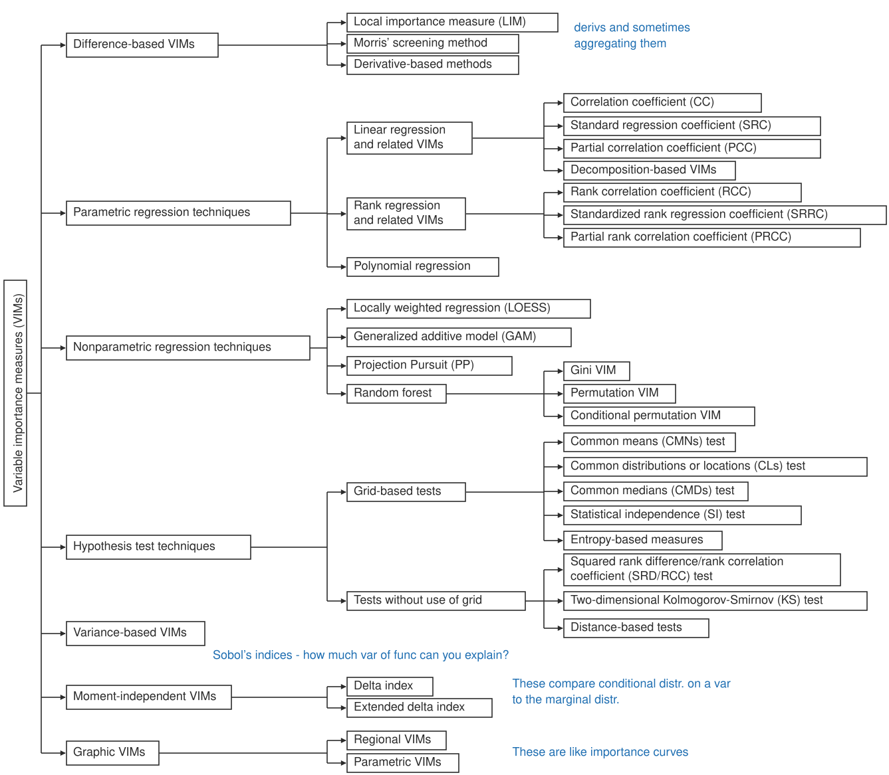
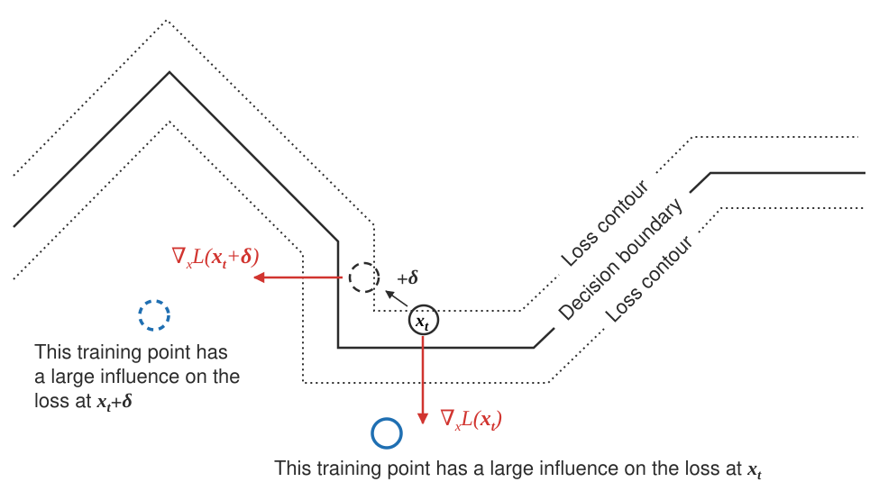
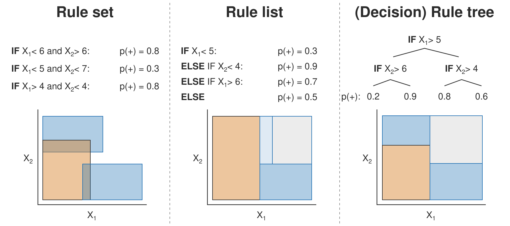
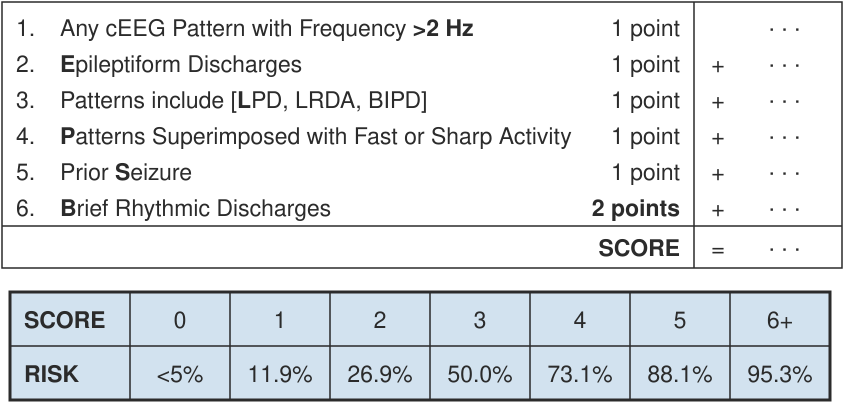
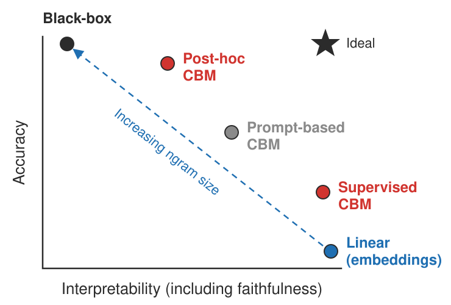
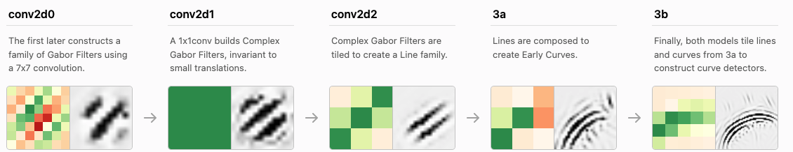
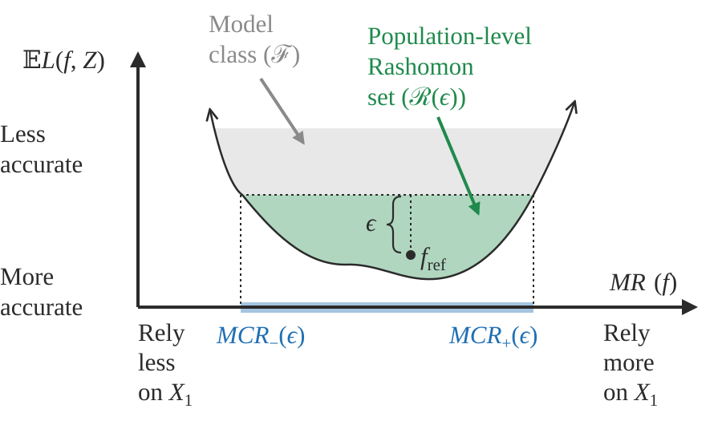

Interpretability#
Some papers on interpretable machine learning - evaluation, transparent models, and post-hoc explanations.
About this chapter
The organizing idea, from Murdoch et al. 2019, is that an interpretation is only useful relative to an audience and a problem. The cheat sheet at the top turns this into a decision: fit a model that is interpretable by design if it is accurate enough, otherwise explain a black box after the fact, either for one prediction or for the whole dataset. The chapter follows the same split after a first section on how interpretations are evaluated and where they break.
Intrinsic interpretability covers transparent models: rule sets, rule lists, trees, GAMs, sparse scoring systems, symbolic regression, and neural nets built around concepts or prototypes. Post-hoc interpretability covers model-agnostic methods (LIME, SHAP, variable importances, importance curves), then methods specific to tree ensembles and neural nets, interactions, influential training points, and distillation into a simpler model. The final section collects other uses: improving models with explanations, human-in-the-loop systems, recourse, RL, and interpretations that hold across a whole set of good models. LLM interpretability has its own section in the LLM chapter.
Some interesting papers on interpretable machine learning, largely organized based on this interpretable ml review (murdoch et al. 2019) and notes from this interpretable ml book (molnar 2019). For interpretability specific to transformers, see here.
The definition of interpretability I like most is that given in murdoch et al. 2019, which states that interpretability needs to be grounded in order to be useful. Specifically, interpretability is only defined with respect to a specific audience + problem and an interpretation should be evaluated in terms of how well it benefits that context.

Fig. 181 Figure 1. Interpretability cheat sheet. If a simpler model is accurate enough, fit one (rule list, tree, GAM); otherwise use a black box and explain it post hoc, either one prediction (LIME, SHAP, ACD) or the whole dataset (importances, curves, example-based methods).#
Useful overview figures from the papers below
comparative table of black-box explanation methods
name |
sampling: E |
sampling: D |
sampling: typea |
generation: model |
generation: objectives |
output type |
stepsb |
I/Oc |
|---|---|---|---|---|---|---|---|---|
Trepan [4] |
Pop. |
Pop. |
P&R |
Decision tree |
Complexity, Fidelity |
Decision tree |
S \(G_M\) |
I |
BETA [15] |
Pop. |
Pop. |
S&D |
Rule-based model |
Interpretability, Fidelity, Unambiguity |
Rule-based global model |
S \(G_M\) |
I |
GoldenEye* [11] |
Pop. |
Pop. |
P&R |
Permutation |
Fidelity, Interaction size |
Important features interactions |
S \(G_M\) \(G_E\) |
I |
VIN [13] |
Pop. |
Pop. |
P&D |
Permutation |
ANOVA projection |
Important features interactions |
S \(G_M\) \(G_E\) |
I |
PDP ICE [14] |
Pop. |
Pop. |
P&D |
NA |
NA |
Dependence plot for one feature |
S \(G_E\) |
O |
QII [5] |
Indiv. or group |
Pop. |
P&D |
NA |
NA |
Var. importance |
S \(G_E\) |
O |
Anchors [23] |
\(\{x_e\}\) |
Pop. |
P&R |
Rule-based model |
Fidelity, Complexity, Generality |
Rule-based local model |
S \(G_M\) |
I |
LIME [22] |
\(\{x_e\}\) |
∅ |
P&R |
Linear model |
Fidelity, Complexity |
Var. importance |
S \(G_M\) \(G_E\) |
O |
Shapley [30] |
\(\{x_e\}\) |
Pop. |
P&D |
NA |
NA |
Var. importance |
S \(G_E\) |
O |
LEMNA [10] |
\(\{x_e\}\) |
∅ |
P&R |
Mixture of linear models |
Fidelity, Complexity |
Var. importance |
S \(G_M\) \(G_E\) |
O |
Local Gradient [2] |
\(\{x_e\}\) |
Pop. |
NA |
Parzen window |
Fidelity |
Directions of highest slope |
\(G_M\) \(G_E\) |
O |
Counterfactuals [28] |
\(\{x_e\}\) |
Pop. |
NA |
Small deviation |
Target output, Distance input |
Example-based |
S \(G_M\) \(G_E\) |
I |
E: scope of the explanation; D: dataset describing the full pop.
a: S: selection, P: perturbation, D: deterministic, R: random
b: S: sampling, \(G_M\): model generation phase, \(G_E\): explanation generation phase
c: I: indirect, O: one-shot
*: the sampling of GoldenEye involves mixing more than two inputs (an extra step between sampling and generation) legend of the explainers table: features reported and abbreviations adopted | feature | description | | — | — | | problem | model explanation, outcome explanation, black box inspection, transparent design | | explanator | DT - decision tree, DR - decision rules, FI - features importance, SM - saliency masks, SA - sensitivity analysis, PDP - partial dependence plot, NA - neurons activation, PS - prototype selection | | black box | NN - neural network, TE - tree ensemble, SVM - support vector machines, DNN - deep neural network, AGN - agnostic black box | | data type | TAB - tabular, IMG - image, TXT - text, ANY - any type of data | | general | indicates if an explanatory approach can be generalized for every black box, i.e., it does not consider peculiarities of the black box to produce the explanation | | random | indicates if any kind of random perturbation or permutation of the original dataset is required for the explanation | | examples | indicates if example of explanations are shown in the paper | | code | indicates if the source code is available | | dataset | indicates if the datasets used in the experiments are available | black-box explainers compared (abbreviations in the legend table above) | name | ref | authors | year | problem | explanator | black box | data type | general | random | examples | code | dataset | | — | — | — | — | — | — | — | — | :-: | :-: | :-: | :-: | :-: | | Trepan | [20] | Craven et al. | 1996 | Model Expl. | DT | NN | TAB | ✓ | | | | ✓ | | - | [50] | Krishnan et al. | 1999 | Model Expl. | DT | NN | TAB | ✓ | | ✓ | | ✓ | | DecText | [9] | Boz | 2002 | Model Expl. | DT | NN | TAB | ✓ | ✓ | | | ✓ | | GPDT | [39] | Johansson et al. | 2009 | Model Expl. | DT | NN | TAB | ✓ | ✓ | ✓ | | ✓ | | Tree Metrics | [14] | Chipman et al. | 1998 | Model Expl. | DT | TE | TAB | | | | | ✓ | | CCM | [23] | Domingos et al. | 1998 | Model Expl. | DT | TE | TAB | ✓ | ✓ | | | ✓ | | - | [29] | Gibbons et al. | 2013 | Model Expl. | DT | TE | TAB | ✓ | ✓ | | | | | STA | [114] | Zhou et al. | 2016 | Model Expl. | DT | TE | TAB | | ✓ | | | | | CDT | [87] | Schetinin et al. | 2007 | Model Expl. | DT | TE | TAB | | | ✓ | | | | - | [32] | Hara et al. | 2016 | Model Expl. | DT | TE | TAB | | ✓ | ✓ | | ✓ | | TSP | [94] | Tan et al. | 2016 | Model Expl. | DT | TE | TAB | | | | | ✓ | | Conj Rules | [19] | Craven et al. | 1994 | Model Expl. | DR | NN | TAB | | ✓ | | | | | G-REX | [37] | Johansson et al. | 2003 | Model Expl. | DR | NN | TAB | ✓ | ✓ | ✓ | | | | REFNE | [115] | Zhou et al. | 2003 | Model Expl. | DR | NN | TAB | ✓ | ✓ | ✓ | | ✓ | | RxREN | [6] | Augasta et al. | 2012 | Model Expl. | DR | NN | TAB | | ✓ | ✓ | | ✓ | | SVM+P | [70] | Nunez et al. | 2002 | Model Expl. | DR | SVM | TAB | | | ✓ | | ✓ | | - | [28] | Fung et al. | 2005 | Model Expl. | DR | SVM | TAB | | | ✓ | | ✓ | | inTrees | [22] | Deng | 2014 | Model Expl. | DR | TE | TAB | | | ✓ | | ✓ | | - | [61] | Lou et al. | 2013 | Model Expl. | FI | AGN | TAB | ✓ | | ✓ | ✓ | ✓ | | GoldenEye | [33] | Henelius et al. | 2014 | Model Expl. | FI | AGN | TAB | ✓ | ✓ | ✓ | ✓ | ✓ | | PALM | [51] | Krishnan et al. | 2017 | Model Expl. | DT | AGN | ANY | ✓ | | ✓ | | ✓ | | - | [97] | Tolomei et al. | 2017 | Model Expl. | FI | TE | TAB | | | ✓ | | | | - | [108] | Xu et al. | 2015 | Outcome Expl. | SM | DNN | IMG | | | ✓ | ✓ | ✓ | | - | [25] | Fong et al. | 2017 | Outcome Expl. | SM | DNN | IMG | | | ✓ | | ✓ | | CAM | [113] | Zhou et al. | 2016 | Outcome Expl. | SM | DNN | IMG | | | ✓ | ✓ | ✓ | | Grad-CAM | [89] | Selvaraju et al. | 2016 | Outcome Expl. | SM | DNN | IMG | | | ✓ | ✓ | ✓ | | - | [56] | Lei et al. | 2016 | Outcome Expl. | SM | DNN | TXT | | | ✓ | | ✓ | | LIME | [83] | Ribeiro et al. | 2016 | Outcome Expl. | FI | AGN | ANY | ✓ | ✓ | ✓ | ✓ | ✓ | | MES | [98] | Turner et al. | 2016 | Outcome Expl. | DR | AGN | ANY | ✓ | | ✓ | | ✓ | | NID | [71] | Olden et al. | 2002 | Inspection | SA | NN | TAB | | | ✓ | | | | GDP | [7] | Baehrens | 2010 | Inspection | SA | AGN | TAB | ✓ | | ✓ | | ✓ | | IG | [92] | Sundararajan | 2017 | Inspection | SA | DNN | ANY | | | ✓ | | ✓ | | VEC | [16] | Cortez et al. | 2011 | Inspection | SA | AGN | TAB | ✓ | | ✓ | | ✓ | | VIN | [35] | Hooker | 2004 | Inspection | PDP | AGN | TAB | ✓ | | ✓ | | ✓ | | ICE | [30] | Goldstein et al. | 2015 | Inspection | PDP | AGN | TAB | ✓ | | ✓ | ✓ | ✓ | | Prospector | [48] | Krause et al. | 2016 | Inspection | PDP | AGN | TAB | ✓ | | ✓ | | ✓ | | Auditing | [2] | Adler et al. | 2016 | Inspection | PDP | AGN | TAB | ✓ | | ✓ | ✓ | ✓ | | OPIA | [1] | Adebayo et al. | 2016 | Inspection | PDP | AGN | TAB | ✓ | | ✓ | | | | - | [110] | Yosinski et al. | 2015 | Inspection | NA | DNN | IMG | | | ✓ | | ✓ | | TreeView | [96] | Thiagarajan et al. | 2016 | Inspection | DT | DNN | TAB | | | ✓ | | ✓ | | IP | [90] | Shwartz et al. | 2017 | Inspection | NA | DNN | TAB | | | ✓ | | | | - | [81] | Radford | 2017 | Inspection | NA | DNN | TXT | | | ✓ | | | | CPAR | [109] | Yin et al. | 2003 | Transp. Design | DR | - | TAB | | | | | ✓ | | FRL | [102] | Wang et al. | 2015 | Transp. Design | DR | - | TAB | | | ✓ | ✓ | ✓ | | BRL | [57] | Letham et al. | 2015 | Transp. Design | DR | - | TAB | | | ✓ | | | | TLBR | [91] | Su et al. | 2015 | Transp. Design | DR | - | TAB | | | ✓ | | ✓ | | IDS | [53] | Lakkaraju et al. | 2016 | Transp. Design | DR | - | TAB | | | ✓ | | | | Rule Set | [104] | Wang et al. | 2016 | Transp. Design | DR | - | TAB | | | ✓ | ✓ | ✓ | | 1Rule | [64] | Malioutov et al. | 2017 | Transp. Design | DR | - | TAB | | | ✓ | | ✓ | | PS | [8] | Bien et al. | 2011 | Transp. Design | PS | - | ANY | | | ✓ | | ✓ | | BCM | [44] | Kim et al. | 2014 | Transp. Design | PS | - | ANY | | | ✓ | | ✓ | | - | [63] | Mahendran et al. | 2015 | Transp. Design | PS | - | IMG | | | ✓ | ✓ | ✓ | | - | [47] | Kononenko et al. | 2010 | Transp. Design | FI | - | TAB | | | ✓ | | ✓ | | OT-SpAMs | [103] | Wang et al. | 2015 | Transp. Design | DT | - | TAB | | | ✓ | ✓ | ✓ |


Fig. 182 Figure 2. Families of variable importance measures, from difference-based and regression-based to variance-based, moment-independent and graphic ones.#
Feature (variable) importance measurement review (VIM) (wei et al. 2015)
often-termed sensitivity, contribution, or impact
some of these can be applied to data directly w/out model (e.g. correlation coefficient, rank correlation coefficient, moment-independent VIMs)
Towards a Generic Framework for Black-box Explanation Methods (henin & metayer 2019)
sampling - selection of inputs to submit to the system to be explained
generation - analysis of links between selected inputs and corresponding outputs to generate explanations
proxy - approximates model (ex. rule list, linear model)
explanation generation - explains the proxy (ex. just give most important 2 features in rule list proxy, ex. LIME gives coefficients of linear model, Shap: sums of elements)
interaction (with the user)
this is a super useful way to think about explanations (especially local), but doesn’t work for SHAP / CD which are more about how much a variable contributes rather than a local approximation
Interpretable Machine Learning: Fundamental Principles and 10 Grand Challenges (rudin et al. ‘21) - emphasizes building glass-box models
Stop Explaining Black Box Machine Learning Models for High Stakes Decisions and Use Interpretable Models Instead (rudin, 2019)
Evaluating interpretability#
The Doshi-Velez and Kim table sets the standard: real people doing the real task is the strongest test, and proxy tasks with no people the weakest. Most papers below measure something narrower, for example whether removing the pixels an attribution ranks highest actually lowers accuracy.
Evaluating interpretability is often fraught (largely because it rarely makes sense to talk about interpretability outside of a specific context, so ML conference papers instead evaluate whatever proxy makes their method look good). The best possible evaluation of interpretability requires benchmarking it with respect to the relevant audience in a context. For example, if an interpretation claims to help understand radiology models, it should be tested based on how well it helps radiologists when actually making diagnoses. The papers here try to find more generic alternative ways to evaluate interp methods (or just define desiderata to do so).
Towards A Rigorous Science of Interpretable Machine Learning (doshi-velez & kim 2017)
Humans
Tasks
Application-grounded Evaluation
Real Humans
Real Tasks
Human-grounded Evaluation
Real Humans
Simple Tasks
Functionally-grounded Evaluation
No Real Humans
Proxy Tasks
Feature importance
Benchmarking Attribution Methods with Relative Feature Importance (yang & kim 2019) - train a classifier, add random stuff (like dogs) to the image, classifier should assign them little importance
Visualizing the Impact of Feature Attribution Baselines (sturmfels, lundberg, & lee, 2020)
top-k-ablation: should identify top pixels, ablate them, and want it to actually decrease
center-of-mass ablation: also could identify center of mass of saliency map and blur a box around it (to avoid destroying feature correlations in the model)
should we be true-to-the-model or true-to-the-data?
Evaluating Feature Importance Estimates (hooker et al. 2019)
remove-and-retrain test accuracy decrease
Do Explanations Reflect Decisions? A Machine-centric Strategy to Quantify the Performance of Explainability Algorithms (lin et al. 2019)
Misc
Quantifying Interpretability of Arbitrary Machine Learning Models Through Functional Decomposition (molnar 2019)
Evaluating Explanation Without Ground Truth in Interpretable Machine Learning (yang et al. 2019)
predictability (does the knowledge in the explanation generalize well)
fidelity (does explanation reflect the target system well)
persuasibility (does human satisfy or comprehend explanation well)
Human-centric#
User studies with data scientists and lay participants. A recurring finding is that people over-trust interpretability tools, and that a more transparent model can make its large mistakes harder, not easier, to spot.
Interpreting Interpretability: Understanding Data Scientists’ Use of Interpretability Tools for Machine Learning (kaur, …, caruana, wallach, vaughan, 2020)
used contextual inquiry + survey of data scientists (SHAP & InterpretML GAMs)
results indicate that data scientists over-trust and misuse interpretability tools
few of our participants were able to accurately describe the visualizations output by these tools
An Evaluation of the Human-Interpretability of Explanation (lage…been kim, gershman, doshi-velez 2019) - controlled human experiments as a few key aspects (explanation length, number of concepts, repeated terms) are varied
Manipulating and Measuring Model Interpretability (sangdeh … vaughan, wallach 2019)
participants who were shown a clear model with a small number of features were better able to simulate the model’s predictions
no improvements in the degree to which participants followed the model’s predictions when it was beneficial to do so.
increased transparency hampered people’s ability to detect when the model makes a sizable mistake and correct for it, seemingly due to information overload
On Evaluating Explanation Utility for Human-AI Decision-Making in NLP (chaleshtori, ghoshal, marasovic, 2023) - different human evaluations of NLP explanations have succeeded in different ways (meta-analysis)
Evaluating the Utility of Model Explanations for Model Development (im, andreas, & zhao, 2023)
Interpretation weaknesses & sanity checks#
Ways explanations fail: saliency maps that should change when the model’s weights are randomized, small input perturbations that drastically change an interpretation, and models built or manipulated so that their explanations hide the features they actually use.
Sanity Checks for Saliency Maps (adebayo et al. 2018)- test what happens when randomizing model parameters - attributions should be different for trained vs random model, but they aren’t for many attribution methods
Rethinking the Role of Gradient-based Attribution Methods for Model Interpretability (srinivas & fleuret, 2021)
logits can be arbitrarily shifted without affecting preds / gradient-based explanations
gradient-based explanations then, don’t necessarily capture info about \(p_\theta(y\vert x)\)
Interpretation of Neural Networks is Fragile (ghorbani et al. 2018)
minor perturbations to inputs can drastically change DNN interpretations
Intuition figure

Fig. 183 Figure 3. Why attributions can be fragile. Near a bend in the decision boundary, a small perturbation \(\delta\) of the test point turns the loss gradient toward a different training point, so the most influential example changes.#
How can we fool LIME and SHAP? Adversarial Attacks on Post hoc Explanation Methods (slack, …, singh, lakkaraju, 2020)
we can build classifiers which use important features (such as race) but explanations will not reflect that
basically classifier is different on X which is OOD (and used by LIME and SHAP)
Fooling Neural Network Interpretations via Adversarial Model Manipulation (heo, joo, & moon 2019) - can change model weights so that it keeps predictive accuracy but changes its interpretation
motivation: could falsely look like a model is “fair” because it places little saliency on sensitive attributes
output of model can still be checked regardless
fooled interpretation generalizes to entire validation set
can force the new saliency to be whatever we like
passive fooling - highlighting uninformative pixels of the image
active fooling - highlighting a completely different object, the firetruck
model does not actually change that much - predictions when manipulating pixels in order of saliency remains similar, very different from random (fig 4)
Counterfactual Explanations Can Be Manipulated (slack,…,singh, 2021) - minor changes in the training objective can drastically change counterfactual explanations
Do Input Gradients Highlight Discriminative Features? (shah et a. 2021) - input gradients often don’t highlight relevant features (they work better for adv. robust models)
prove/demonstrate this in synthetic dataset where \(x=ye_i\) for standard basis vector \(e_i\), \(y=\{\pm 1\}\)

Intrinsic interpretability (i.e. how can we fit a simpler model) = transparent models#
Models that are interpretable as fitted. Many are implemented in the imodels package. Rules, trees and GAMs come first, then sparse and symbolic models, then neural nets constrained to be readable.
For an implementation of many of these models, see the python imodels package.
Decision rules overview#
The three rule models differ in how rules combine. A rule set’s rules may overlap and leave gaps, a rule list applies the first rule that fires, and a tree splits the space into disjoint leaves. Each can be converted into the next, as the bullets below explain.
📌 see also notes on logic


Fig. 184 Figure 4. The same two-feature space partitioned by a rule set (overlapping rules), a rule list (first matching rule wins) and a rule tree (disjoint leaves), each giving \(p(+)\) per region.#
2 basic concepts for a rule
coverage = support
accuracy = confidence = consistency
measures for rules: precision, info gain, correlation, m-estimate, Laplace estimate
these algorithms often don’t natively supportregression, but you can get regression by cutting the outcome into intervals
why might these be useful?
The Magical Mystery Four: How is Working Memory Capacity Limited, and Why? (cowan, 2010 ) - a central memory store is limited to 3 to 5 meaningful items in young adults
Feldman (2000): humans can understand logical rules with boolean complexity of up to 5–9, depending on their ability, where the boolean complexity is the length of the shortest Boolean formula logically equivalent to the concept, usually expressed in terms of the number of literals
connections
every decision list is a (one-sided) decision tree
every decision tree can be expressed as an equivalent decision list (by listing each path to a leaf as a decision rule)
leaves of a decision tree (or a decision list) form a decision set
recent work directly optimizes the performance metric (e.g., accuracy) with soft or hard sparsity constraints on the tree size, where sparsity is measured by the number of leaves in the tree using:
mathematical programming, including mixed integer programming (MIP) / SAT solvers
stochastic search through the space of trees
customized dynamic programming algorithms that incorporate branch-and-bound techniques for reducing the size of the search space
Rule sets#
Independent if-then rules that may overlap and need not cover the whole space. Methods range from greedy rule builders and boosting to RuleFit, which mines rules from many trees and fits a sparse linear model on them, to Bayesian rule sets that OR together clauses of ANDs.
Rule sets commonly look like a series of independent if-then rules. Unlike trees / lists, these rules can be overlapping and might not cover the whole space. Final predictions can be made via majority vote, using most accurate rule, or averaging predictions. Sometimes also called rule ensembles.
popular ways to learn rule sets
SLIPPER (cohen, & singer, 1999) - repeatedly boosting a simple, greedy rule-builder
Lightweight Rule Induction (weiss & indurkhya, 2000) - specify number + size of rules and classify via majority vote
Maximum Likelihood Rule Ensembles (dembczyński et al. 2008) - MLRules - rule is base estimator in ensemble - build by greedily maximizing log-likelihood
rulefit (friedman & popescu, 2008) - extract rules from many decision trees, then fit sparse linear model on them
A statistical approach to rule learning (ruckert & kramer, 2006) - unsupervised objective to mine rules with large maring and low variance before fitting linear model
Generalized Linear Rule Models (wei et al. 2019) - use column generation (CG) to intelligently search space of rules
re-fit GLM as rules are generated, reweighting + discarding
with large number of columns, can be intractable even to enumerate rules - CG avoids this by fitting a subset and using it to construct most promising next column
also propose a non-CG algorithm using only 1st-degree rules
note: from every pair of complementary singleton rules (e.g., \(X_j \leq1\), \(X_j > 1\)), they remove one member as otherwise the pair together is collinear
Multivariate Adaptive Regression Splines (MARS) (friedman, 1991) - sequentially learn weighted linear sum of ReLus (or products of ReLus)
do backward deletion procedure at the end
MARS via LASSO (ki, fang, & guntuboyina, 2021)
Hardy-Krause denoising (fang, guntuboyina, & sen, 2020) - builds additive models of piecewise constant functions along with interactions and then does LASSO on them
more recent global versions of learning rule sets
interpretable decision set (lakkaraju et al. 2016) - set of if then rules
short, accurate, and non-overlapping rules that cover the whole feature space and pay attention to small but important classes
A Bayesian Framework for Learning Rule Sets for Interpretable Classification (wang et al. 2017) - rules are a bunch of clauses OR’d together (e.g. if (X1>0 AND X2<1) OR (X2<1 AND X3>1) OR … then Y=1)
they call this method “Bayesian Rule Sets”
Or’s of And’s for Interpretable Classification, with Application to Context-Aware Recommender Systems (wang et al. 2015) - BOA - Bayesian Or’s of And’s
Vanishing boosted weights: A consistent algorithm to learn interpretable rules (sokolovska et al. 2021) - simple efficient fine-tuning procedure for decision stumps
when learning sequentially, often useful to prune at each step (Furnkranz, 1997)
Multi-value Rule Sets for Interpretable Classification with Feature-Efficient Representations (wang, 2018)
measure how long it takes for people to calculate predictions from different rule-based models
Rule lists#
Ordered if-then-else rules. Most methods first mine frequent patterns and then search over orderings of them: Bayesian rule lists sample lists under a prior favoring short ones, and certifiably optimal rule lists bound the loss to prune the search.
oneR algorithm - select feature that carries most information about the outcome and then split multiple times on that feature
sequential covering - keep trying to cover more points sequentially
pre-mining frequent patterns (want them to apply to a large amount of data and not have too many conditions)
FP-Growth algorithm (borgelt 2005) is fast
Aprior + Eclat do the same thing, but with different speeds
random intersection trees (shah & meinshausen 2013)
interpretable classifiers using rules and bayesian analysis (letham et al. 2015)
start by pre-mining frequent patterns rules
current approach does not allow for negation (e.g. not diabetes) and must split continuous variables into categorical somehow (e.g. quartiles)
mines things that frequently occur together, but doesn’t look at outcomes in this step - okay (since this is all about finding rules with high support)
learn rules w/ prior for short rule conditions and short lists
start w/ random list
sample new lists by adding/removing/moving a rule
at the end, return the list that had the highest probability
scalable bayesian rule lists (yang et al. 2017) - faster algorithm for computing
doesn’t return entire posterior
learning certifiably optimal rules lists (angelino et al. 2017) - even faster optimization for categorical feature space
can get upper / lower bounds for loss = risk + \(\lambda\) * listLength
doesn’t return entire posterior
Expert-augmented machine learning (gennatas et al. 2019)
make rule lists, then compare the outcomes for each rule with what clinicians think should be outcome for each rule
look at rules with biggest disagreement and engineer/improve rules or penalize unreliable rules
Fast and frugal heuristics: The adaptive toolbox. (gigerenzer et al. 1999) - makes rule lists that can split on either node of the tree each time
Trees#
Greedy trees (CART, C4.5) come first, then optimal sparse trees that minimize loss plus a penalty per leaf with dynamic programming, bounds or integer programming. Later threads connect trees with boosting (FIGS, boosted stumps rewritten as trees), Bayesian priors, regularization like hierarchical shrinkage, and density estimation.
Trees suffer from the fact that they have to cover the entire decision space and often we end up with replicated subtrees.
history
automatic interaction detection (AID) regression trees (Morgan & Sonquist, 1963)
THeta Automatic Interaction Detection (THAID) classification trees (Messenger & Mandell, 1972)
Chi-squared Automatic Interaction Detector (CHAID) (Kass, 1980)
CART: Classification And Regression Trees (breiman et al. 1984) - splits on GINI
ID3 (Quinlan, 1986)
C4.5 (Quinlan, 1993) - splits on binary entropy instead of GINI
optimal trees
motivation
cost-complexity pruning (breiman et al. 1984 ch 3) - greedily prune while minimizing loss function of loss + \(\lambda \cdot (\text{numLeaves})\)
replicated subtree problem (bagallo & haussler, 1990) - they propose iterative algorithms to try to overcome it
GOSDT: Generalized and Scalable Optimal Sparse Decision Trees (lin…rudin, seltzer, 2020)
optimize for \(\min \cblue{L(X, y)} + \corange{\lambda \cdot (\text{numLeaves})}\)
loss + sparsity penalty
full decision tree optimization is NP-hard (laurent & rivest, 1976)
can optimize many different losses (e.g. accuracy, AUC)
speedups: use dynamic programming, prune the search-space with bounds
How Smart Guessing Strategies Can Yield Massive Scalability Improvements for Sparse Decision Tree Optimization (mctavish…rudin, seltzer, 2021)
hash trees with bit-vectors that represent similar trees using shared subtrees
tree is a set of leaves
derive many bounds
e.g. if know best loss so far, know shouldn’t add too many leaves since each adds \(\lambda\) to the total loss
e.g. similar-support bound - if two features are similar, then bounds for splitting on the first can be used to obtain bounds for the second
OSDT: optimal sparse decision trees (hu et al. 2019) - previous paper, slower
bounds: Upper Bound on Number of Leaves, Leaf Permutation Bound
Fast Optimization of Weighted Sparse Decision Trees for use in Optimal Treatment Regimes and Optimal Policy Design (behrouz…rudin, & seltzer, 2022) - extend method to work with weights on samples
OCT: optimal classification trees methodology paper (bertsimas & dunn, 2017) - solve optimal tree with expensive, mixed-integer optimization - realistically, usually too slow
- \[\begin{split}\begin{array}{cl} \min & \cblue{\overbrace{R_{x y}(T)}^{\text{misclassification err}}}+\corange{\alpha\vert T\vert} \\ \text { s.t. } & \cgreen{N_{x}(l) \geq N_{\min }} \quad \forall l \in \text { leaves }(T) \end{array}\end{split}\]
\(\vert T\vert\) is the number of branch nodes in tree \(T\)
\(N_x(l)\) is the number of training points contained in leaf node \(l\)
optimal classification trees on PECARN TBI (bertsimas et al. 2019)
Learning Optimal Fair Classification Trees (jo et al. 2022)
Better Short than Greedy: Interpretable Models through Optimal Rule Boosting (boley, …, webb, 2021) - find optimal tree ensemble (only works for very small data)
connections with boosting
Fast Interpretable Greedy-Tree Sums (FIGS) (tan et al. 2022) - extend cart to learn concise tree ensembles 🌳 ➡️ 🌱+🌱
very nice results for generalization + disentanglement
AdaTree - learn Adaboost stumps then rewrite as a tree (grossmann, 2004) 🌱+🌱 ➡️ 🌳
note: easy to rewrite boosted stumps as tree (just repeat each stump for each node at a given depth)
MediBoost - again, learn boosted stumps then rewrite as a tree (valdes…solberg 2016) 🌱+🌱 ➡️ 🌳 but with 2 tweaks:
shrinkage: use membership function that accelerates convergence to a decision (basically shrinkage during boosting)
prune the tree in a manner that does not affect the tree’s predictions
prunes branches that are impossible to reach by tracking the valid domain for every attribute (during training)
post-prune the tree bottom-up by recursively eliminating the parent nodes of leaves with identical predictions
AddTree = additive tree - learn single tree, but rather than only current node’s data to decide the next split, also allow the remaining data to also influence this split, although with a potentially differing weight (luna, …, friedman, solberg, valdes, 2019)
the weight is chosen as a hyperparameter
Additive groves (sorokina, carauna, & riedewald 2007) - additive model of a few deep trees (gradually increase number and size of trees)
Random Planted Forest: a directly interpretable tree ensemble (hiabu, mammen, & meyer, 2023) - propose a planted tree very similar to FIGS, but use it in a randomized ensemble that restricts the number of interactions in a tree (similar to GAMs)
bayesian trees
Bayesian Treed Models (chipman et al. 2001) - impose priors on tree parameters
treed models - fit a model (e.g. linear regression) in leaf nodes
tree structure e.g. depth, splitting criteria
values in terminal nodes coditioned on tree structure
residual noise’s standard deviation
Stochastic gradient boosting (friedman 2002) - boosting where at iteration a subsample of the training data is used
BART: Bayesian additive regression trees (chipman et al. 2008) - learns an ensemble of tree models using MCMC on a distr. imbued with a prior (not interpretable)
pre-specify number of trees in ensemble
MCMC step: add split, remove split, switch split
cycles through the trees one at a time
tree regularization
Hierarchical Shrinkage: improving accuracy and interpretability of tree-based methods (agarwal et al. 2021) - post-hoc shrinkage improves trees
Hierarchical priors for Bayesian CART shrinkage (chipman & mcculloch, 2000)
Connecting Interpretability and Robustness in Decision Trees through Separation (moshkovitz et al. 2021)
Efficient Training of Robust Decision Trees Against Adversarial Examples (vos & verwer 2020)
Robust Decision Trees Against Adversarial Examples (chen, …, hsieh, 2019)
optimize tree performance under worst-case input-feature perturbation
trees for density estimation
in density estimation, we seek a tree \(\hat{f}(\mathbf{x})\) approximating the underlying density function \(f(\mathbf{x})\)
ideal loss function to minimize is \(\mathcal{R}=\int(\hat{f}(\mathbf{x})-f(\mathbf{x}))^2 \mathrm{~d} \mathbf{x}\)
instead, we minimize approximation for a node t: \(\mathcal{R}(t) = \frac{1}{n} \frac{n_t}{Vol_t}\)
\(n\) is total points in dataset
\(n_t\) is points in node \(t\)
\(Vol_t\) is volume of the subset of the data that meets the criteria leading to that node (e.g. given 2 splits on different features, it would be area of a square bounded on one side by the split and the other side by the max
Density Estimation Trees (ram & gray, 2011)
Sparse Density Trees and Lists: An Interpretable Alternative to High-Dimensional Histograms (goh, semenova, & rudin, 2024)
On the price of explainability for some clustering problems (laber et al. 2021) - trees for clustering
Interpretable clustering: an optimization approach (bertsimas…wilberg, 2020)
open problems: ensemble methods, improvements in splitting criteria, missing variables, longitudinal data, survival curves
misc
On the Power of Decision Trees in Auto-Regressive Language Modeling (gan, galanti, poggio, malach, 2024)
get token word embeddings
compute exp. weighted avg of embeddings (upweights most recent tokens)
predicts next embedding with XGBoost (regression loss) then finds closest token
counterfactuals
Counterfactual Explanations for Oblique Decision Trees: Exact, Efficient Algorithms (2021)
Optimal Counterfactual Explanations in Tree Ensembles (parmentier & vidal 2021)
Desiderata for Interpretability: Explaining Decision Tree Predictions with Counterfactuals
Human knowledge models: Learning applied knowledge from the data (dudyrev…pianykh, 2022) - very concise logic model
extremely randomized trees (geurts ernst, & wehenkel, 2006) - randomness goes further than Random Forest - randomly select not only the feature but also the split thresholds (and select the best out of some random set)
Constraint Enforcement on Decision Trees: A Survey (nanfack…brenay, 2022)
3 classes of constraints
feature-level: monotonicity, attribute costs, hierarchy/interaction, fairness, privacy
structure-level - e.g. minimize #nodes
instance-level - must (cannot) link, robust predictions
Analysis of Boolean functions (wiki)
Every real-valued function \(f:\{-1,1\}^n \rightarrow \mathbb{R}\) has a unique expansion as a multilinear polynomial: $\( f(x)=\sum_{S \subseteq[n]} \hat{f}(S) \chi_S(x), \quad \overbrace{\chi_S(x)=\prod_{i \in S} x_i}^{\text{Interactions}} \)$
Decision diagrams#
Trees whose paths may rejoin, which avoids replicated subtrees. Most methods post-process a fitted tree or compress an ensemble into a diagram.
Also called decision graphs / decision streams
Algorithms for learning diagrams usually postprocess a given tree (and taking an MDL perspective)
Decision diagrams for model compression
Simplifying decision trees: A survey (breslow & aha, 1997)
Large Random Forests: Optimisation for Rapid Evaluation (gossen & steffen, 2019)
Optimal Decision Diagrams for Classification (florio…vidal 2022) - decision diagrams are like trees but paths can rejoin
Extracting rules from neural networks as decision diagrams (Chorowski, J., J.M. Zurada. 2011)
Decision Jungles: Compact and Rich Models for Classification (shotton et al. 2013) - ensembles of decision diagrams
Decision Stream: Cultivating Deep Decision Trees (ignatov & ignatov, 2017)
merge nodes from different branches based on their similarity that is estimated with two-sample test statistics
nothing to do with deep learning
misc
Optimizing Binary Decision Diagrams for Interpretable Machine Learning Classification (cabodi et al. 2021)
proposing a SAT-based model for computing a decision tree as the smallest Reduced Ordered Binary Decision Diagram
exploring heuristic approaches for deriving sub-optimal (i.e., not minimal) ROBDDs, in order to improve the scalability of the proposed technique.
Optimizing Binary Decision Diagrams with MaxSAT for classification (hu et al. 2022)
Deep Differentiable Logic Gate Networks (peterson, …, deussen, 2022)
Linear (+algebraic) models#
Gams (generalized additive models)#
A GAM adds up one shape function per feature, so each feature’s effect can be plotted on its own. The papers differ in the basis for those shape functions (splines, trees, neural nets), in how they are fit (backfitting or cyclic boosting), and in whether they add a few interaction terms.
gam takes form \(g(\mu) = b + f_0(x_0) + f_1(x_1) + f_2(x_2) + ...\)
usually assume some basis for the shape functions \(f\), like splines, polynomials, or tree sums (and we select how many either manually or with some complexity penalty)
backfitting - traditional way to fit - each \(f_i\) is fitted sequentially to the residuals of the previously fitted \(f_0,...,f_{i-1}\) (hastie & tibshirani, 1989)
once all are fit, discard each shape function and re-fit to the residuals of all others one at a time
(cyclic) boosting - fit all \(f\) simultaneously, e.g. one tree for each \(f_i\) on each iteration
interpretability depends on (1) transparency of \(f_i\) and (2) number of terms
can also add in interaction terms (e.g. \(f_i(x_1, x_2)\)), but need a way to rank which interactions to add (see notes on interactions)
Explainable boosting machine: tree-based shape functions trained with cyclical boosting
Intelligible models for classification and regression (lou, caruana, & gehrke, 2012) - find that gradient boosting with shallow trees outperforms other models for \(f_i\)
\(GA^2M\) (lou, caruana, gehrke, & hooker, 2013) - select interactions using algorithm called FAST
Pneumonia risk (caruana, lou, gehrke, koch, sturm, & elhadad, 2015) - application of GA2M finds interesting patterns (e.g. asthma decreases pneumonia risk)
InterpretML: A Unified Framework for Machine Learning Interpretability (nori…caruana 2019) - software package mostly for EBM
Adding differential privacy to EBM (nori, caruana et al. 2021)
Neural Additive Models: Interpretable Machine Learning with Neural Nets (agarwal, …, caruana, & hinton, 2021) - shape functions are a DNN (also use ExU activation instead of ReLU to model sharp bumps)
no interaction terms
Neural interaction transparency (NIT) (tsang et al. 2017) - learn gam by regularizing DNN
NODE-GAM: Neural Generalized Additive Model for Interpretable Deep Learning (chang, caruana, & goldenberg, 2021)
\(NODE-GA^2M\): include interaction terms by initializing with all interaction terms and backprop decides which are kept
uses neural oblivious trees rather than standard DNN
idea dates back to Generalized Additive Neural Networks (potts, 1999)
Sparse Neural Additive Model: Interpretable Deep Learning with Feature Selection via Group Sparsity (xu et al. 2022)
Creating Powerful and Interpretable Models with Regression Networks (2021) - generalizes neural GAM to include interaction terms
train first-order functions
fix them and predict residuals with next order (and repeat for as many orders as desired)
Spline-based models
Fast Stable Direct Fitting and Smoothness Selection for Generalized Additive Models (wood, 2008)
Other models
Additive Models with Trend Filtering (sadhanala & tibshirani, 2018) - piecewise polynomial components with total variation regularization
Fused Lasso Additive Model (petersen, weitten & simon, 2014) - shape functions are piecewise constant with a small number of knots
Ensembling
Ensemble classification based on generalized additive models (bock…poel, 2009) - use sample bagging, feature bagging, and combine both to find improved performance (use spline-based GAMs)
Efficiently Training Intelligible Models for Global Explanations (lou…dong, 2020) - use subsample bagging (bags select from a subset of samples) and speed up fitting by sharing computation between bags that share points
misc improvements
Axiomatic Interpretability for Multiclass Additive Models (zhang, tan, … caruana, 2019) - extend GAM to multiclass and improve visualizations in that setting
Sparse Partially Linear Additive Models (lou, bien, caruana & gehrke, 2015) - some terms are linear and some use \(f_i(x_i)\)
Neural Basis Models for Interpretability (2022)
Scalable Interpretability via Polynomials (2022)
How Interpretable and Trustworthy are GAMs? (chang, tan, lengerich, goldenberg, & caruana, 2021) - different GAM algorithms provide different interpretations, tree-based GAMs appear best
feature-sparse GAMs may perform worse on some data subsets
overly smooth GAMs may fail to identify sharp jumps that may be errors in data
bias-variance decomposition of different GAM algorithms (based on multiple refits and predictions) shows that some have less bias whereas others less variance
Supersparse models#
Scoring systems with a few small integer points, like the seizure risk score below, which a clinician can add up by hand.
four main types of approaches to building scoring systems
exact solutions using optimization techniques (often use MIP)
approximation algorithms using linear programming (use L1 penalty instead of L0)
can also try sampling
more sophisticated rounding techniques - e.g. random, constrain sum, round each coef sequentially
computeraided exploration techniques
Supersparse linear integer models for optimized medical scoring systems (ustun & rudin 2016)
2helps2b: seizure prediction from EEG (struck, ustun…rudin, westover)

Fig. 185 Figure 5. The 2HELPS2B seizure risk score. Six yes/no items worth 1 or 2 points are summed, and the total maps to a seizure risk, from under 5% at 0 points to 95% at 6 or more.#
note: scoring systems map points to a risk probability
An Interpretable Model with Globally Consistent Explanations for Credit Risk (chen et al. 2018) - a 2-layer linear additive model
Fast Sparse Classification for Generalized Linear and Additive Models (liu, …, seltzer, rudin, 2022)
Naive Feature Selection: Sparsity in Naive Bayes (askari…el ghaoui, 2020) - sparse naive bayes feature selection is on par with lasso but much faster
GroupFasterRisk: Fast and Interpretable Mortality Risk Scores for Critical Care Patients (zhu…rudin, 2023) - builds linear integer model over bins of features. Group sparsity penalty penalizes number of unique features, whereas a secondary penalty controls the number of bins used per feature

Symbolic regression#
Searching over formulas instead of fitting parameters of a fixed form. The approaches are genetic search over expression trees, distilling a fitted black box into a formula, and neural nets pretrained to output an equation skeleton whose constants are then fit.
Symbolic regression learns a symbolic expression for a function (e.g. a mathematical formula) given priors on what kinds of symbols (e.g. addition versus sin) are more “difficult” [see also notes on LLM-in-the-loop symbolic regression]
Interpretable Scientific Discovery with Symbolic Regression: A Review (makke & chawla, 2022)
-
Search for tree that represents expression: maximize acc + minimize number of nodes in the tree (e.g. PySR package, cranmer 2023)
Discovering Symbolic Models from Deep Learning with Inductive Biases (cranmer…ho, 2020) - rather than learning entire function class at once, learn compositions (so second function takes first function as input), which allows functions to gradually become much more complex
Symbolic-Regression Boosting (sipper & moore, 2022)
Post-hoc distillation
Demystifying Black-box Models with Symbolic Metamodels (alaa, van der schaar, 2019) - distill black-box model with Meijer G-functions (rather than pre-specifying some forms, as is done with symbolic regression)
Symbolic Metamodels for Interpreting Black-boxes Using Primitive Functions (abroshan…khalili, 2023) - use GP approach
Neural Symbolic Regression using Control Variables (chu…shao, 2023)
Discovering Symbolic Models from Deep Learning with Inductive Biases (cranmer…ho, 2020) - focused on GNNs, extracts equations from model weights
Providing Post-Hoc Symbolic Explanations for Sequential Decision-Making Problems with Black Box Simulators (sreedharan et al. 2020)
neural networks
2-step symbolic regr: first generate equation skeleton, then optimize constants with GD
Neural Symbolic Regression that Scales (biggio et al. 2021) - use large pretraining set
SymbolicGPT (valipour…ghodsi, 2021) - similar but use point cloud rather than attention
Deep symbolic regression (petersen…kim, 2021) - RL-based
End-to-End symbolic regression (still use final refinement step)
AI Feynman: A physics-inspired method for symbolic regression (udresku & tegmark, 2020) - use a loop with many if-then checks to decompose the equations
End-to-end symbolic regression with transformers (kamienny…charton, 2022) - explicitly train transformer from scratch to do the task
SymFormer (vastl…babuska, 2022)
Deep Generative Symbolic Regression (holt…van der schaar, 2023) - use RL
Building and Evaluating Interpretable Models using Symbolic Regression and Generalized Additive Models (sharif, 2017)
Logic Regression (ruczinski, kooperberg & leblanc, 2012) - given binary input variables, automatically construct interaction terms and linear model (fit using simulated annealing)
Model Learning with Personalized Interpretability Estimation (virgolin…wahde, 2021) - use HITL to decide which symbolic functions are most interpretable
Interpretable neural nets#
Neural nets with interpretable pieces built in: a layer of human concepts (concept bottlenecks), parts of the input they point to, or prototypes from the training set that each prediction is compared with.
Adaptive wavelet distillation from neural networks through interpretations (ha et al. 2021) - distill flexible wavelet using gradient-based interpretation scores from a neural net
PINN: Physics-informed neural networks: A deep learning framework for solving forward and inverse problems involving nonlinear partial differential equations (raissi et al. 2019) - solve PDEs by constraining neural net to predict specific parameters / derivatives
Two Instances of Interpretable Neural Network for Universal Approximations (tjoa & cuntai, 2021) - each neuron responds to a training point
B-Cos Networks: Alignment Is All We Need for Interpretability (bohle…schiele, 2022) - promotes weight-input alignment during training
Concepts#
Concept bottleneck models predict human-named concepts first and the label from those concepts. Recent variants get the concepts without labels, by projecting embeddings onto text concepts or by asking LLMs to propose and answer questions.
📌 see also notes on LLMs


Fig. 186 Figure 6. Where concept bottleneck models sit between a black box (accurate, not interpretable) and a linear model on embeddings. Post-hoc CBMs are closest to the black box in accuracy; supervised CBMs are more interpretable but less accurate.#
CBM: Concept Bottleneck Models (koh et al. 2020) - predict intermediate concepts before making final prediction
Post-hoc CBM (yuksekgonul…zou, 2022) - automatically project embeddings to concepts and train linear model on those
Visual Classification via Description from LLMs (menon & vondrick, 2022) - LLM lists relevant classes, and predict using VLM embedding similarities to those claseses
Label-Free CBM (oikarinen…lily weng, 2023) - extend to learn to match text concepts extracted with embeddings of any vision model
uses CLIP-Dissect method (oikarinen & lily weng, 2023)
CBMs with LLMs / VLMs
Crafting Interpretable Embeddings by Asking LLMs Questions (benara…gao, 2024) - use LLM to generate and answer questions corresponding to concepts, then use LASSO to select relevant questions
BC-LLM: Bayesian CBMs with LLM Priors (feng…tan, 2024) - use LLM to generate questions from extracted keywords, then iterate on fitting predictive models and searching for new concepts with a Bayesian approach
HACHI: Human-AI Co-design for Clinical Prediction Models (feng…singh, 2026)
LaBO: Language in a Bottle: Language Model Guided CBMs for Interpretable Image Classification (yang…yatskar, 2022) - generate prompt-based features using GPT-3 (e.g. “brown head with white stripes”) and use CLIP to check for the presence of those features, all before learning simple linear model
Knowledge-enhanced Bottlenecks (KnoBo) - A Textbook Remedy for Domain Shifts: Knowledge Priors for Medical Image Analysis (yang…yatskar, 2024) - CBMs that incorporate knowledge priors that constrain it to reason with clinically relevant factors found in medical textbooks or PubMed
Concept Sliders: LoRA Adaptors for Precise Control in Diffusion Models (gandikota…torralba, bau, 2024)
Towards Achieving Concept Completeness for Unsupervised Textual CBMs (bhan…lesot, 2025) - distill embeddings from a trained model
Constructing Concept-based Models to Mitigate Spurious Correlations with Minimal Human Effort (kim, wang, & qiu, 2024) - in vision models, use LLM to brainstorm and annotate features, especially correlated spurious ones
Refining CBMs
Tree-Based Leakage Inspection and Control in CBMs (ragkousis & parbhoo, 2024) - investigate where soft version of a feature outperforms hard version of the feature
Stochastic CBMs (vandenhirtz…vogt, 2024) - model covariance between concepts
Coarse-to-Fine CBMs (panousis…marcos, 2024)
MoIE: Route, Interpret, Repeat (ghosh, …, batmangehelich, 2023) - mixture of different interpretable models, with black-box routing
SASC (singh, …, gao, 2023) - (not the main message of the paper but one relevant experiment): learn factors from BERT using dictionary learning, assign each factor a natural-language explanation, then build a sparse linear model of these factors
Towards Robust Interpretability with Self-Explaining Neural Networks (alvarez-melis & jaakkola 2018) - use regularization to ensure model is aligned with concepts
Localization#
WILDCAT: Weakly Supervised Learning of Deep ConvNets for Image Classification, Pointwise Localization and Segmentation (durand et al. 2017) - constrains architecture: after extracting conv features, replace linear layers with special pooling layers, which helps with spatial localization
each class gets a pooling map
prediction for a class is based on top-k spatial regions for a class
finally, can combine the predictions for each class
BagNet: Approximating CNNs with Bag-of-local-Features models works surprisingly well on ImageNet (brendel & bethge, 2019 - CNN is restricted to look at very local features only and still does well (and produces an inbuilt saliency measure)
Models are generally biased to learn shapes not texture (geirhos…brendel, 2019)
Example-based = case-based (e.g. prototypes, nearest neighbor)#
Networks that classify by comparing an input with learned prototypes, each tied to a real training patch, so a prediction reads as “this looks like that”. ProtoPNet is the template; the rest extend it to trees, transformers, shared prototypes and medical images.
ProtoPNet: This looks like that (chen, …, rudin, 2018; 2nd prototypes paper) - learn convolutional prototypes that are smaller than the original input size
use L2 distance in repr space to measure distance between patches and prototypes
loss function
require the filters to be identical to the latent representation of some training image patch
cluster image patches of a particular class around the prototypes of the same class, while separating image patches of different classes
maxpool class prototypes so spatial location doesn’t matter
also get heatmap of where prototype was activated (only max really matters)
train in 3 steps
train everything: classification + clustering around intraclass prototypes + separation between interclass prototypes (last layer fixed to 1s / -0.5s)
project prototypes to data patches
learn last (linear) layer
ProtoNets (li, …, rudin, 2017; 1st prototypes paper)
uses encoder/decoder setup
encourage every prototype to be similar to at least one encoded input
results: learned prototypes in fact look like digits & correct class prototypes go to correct classes
loss: classification + reconstruction + distance to a training point
Concept Whitening for Interpretable Image Recognition (chen, bei, & rudin, 2020) - force network to separate “concepts” (like in TCAV) along different axes
This Looks Like That, Because … Explaining Prototypes for Interpretable Image Recognition (nauta…seifert 2020) - add textual quantitative information about visual characteristics deemed important by the classification model e.g. colour hue, shape, texture, contrast and saturation
Neural Prototype Trees for Interpretable Fine-Grained Image Recognition (nauta…seifert 2021) - build decision trees on top of prototypes - performance is slightly poor until they use ensembles
Concept transformers (rigotti… scotton, 2022) - use human-given concepts and explain predictions as a function of these concepts
applications to medical imaging
IAIA-BL: A Case-based Interpretable Deep Learning Model for Classification of Mass Lesions in Digital Mammography (barnet…rudin, 2021) - improve algorithm specifically for mammography
XProtoNet: Diagnosis in Chest Radiography With Global and Local Explanations (eunji kim…yoon, 2021) - alter ProtoPNet to use dynamically sized patches for prototype matching rather than fixed-size patches
PIP-NET (nauta…seifert, 2023) - applying prototypes to medical image classification
ProtoMIL: Multiple Instance Learning with Prototypical Parts for Fine-Grained Interpretability (rymarczyk et al. 2021)
AutoProtoNet: Interpretability for Prototypical Networks (sandoval-segura & lawson, 2022)
builds interpretability into Prototypical Networks by training an embedding space suitable for reconstructing inputs
also devise a prototype refinement method, which allows a human to debug inadequate classification parameters
TesNet: Interpretable Image Recognition by Constructing Transparent Embedding Space (wang et al. 2021) - alter ProtoPNet to get “orthogonal” basis concepts
ProtoPShare: Prototype Sharing for Interpretable Image Classification and Similarity Discovery (rymarczyk et al. 2020),- share some prototypes between classes with data-dependent merge pruning
merge “similar” prototypes, where similarity is measured as dist of all training patches in repr. space
Interpretable Image Classification with Differentiable Prototypes Assignment (rmyarczyk et al. 2021)
These do not Look Like Those: An Interpretable Deep Learning Model for Image Recognition (singh & yow, 2021) - all weights for prototypes are either 1 or -1
Towards Explainable Deep Neural Networks (angelov & soares 2019) - more complex version of using prototypes
Self-Interpretable Model with Transformation Equivariant Interpretation (wang & wang, 2021)
generate data-dependent prototypes for each class and formulate the prediction as the inner product between each prototype and the extracted features
interpretation is hadamard product of prototype and extracted features (prediction is sum of this product)
interpretations can be easily visualized by upsampling from the prototype space to the input data space
regularization
reconstruction regularizer - regularizes the interpretations to be meaningful and comprehensible
for each image, enforce each prototype to be similar to its corresponding class’s latent repr.
transformation regularizer - constrains the interpretations to be transformation equivariant
self-consistency score quantifies the robustness of interpretation by measuring the consistency of interpretations to geometric transformations
ProtoAttend: Attention-Based Prototypical Learning (arik & pfister, 2020) - unlike ProtoPNet, each prediction is made as a weighted combination of similar input samples (like nearest-neighbor)
Explaining Latent Representations with a Corpus of Examples (crabbe, …, van der schaar 2021) - for an individual prediction,
Which corpus examples explain the prediction issued for a given test example?
What features of these corpus examples are relevant for the model to relate them to the test example?
Interpreting Deep Neural Networks through Prototype Factorization - posthoc convert DNN into having different factors
ProtoPFormer: Concentrating on Prototypical Parts in Vision Transformers for Interpretable Image Recognition (xue et al. 2022)
Learning Optimally Sparse Support Vector Machines (cotter, shalev-shwartz, & srebro, 2013) - minimize number of support vectors
Counterfactual Explanations for Support Vector Machine Models (salazar et al. 2022)
Connecting dnns and rules#
Two directions: train trees with neural-net tools (soft splits learned by backprop, TAO’s alternating node updates, trees on network features), or put rules into networks as priors and extract rules back out of trained nets.
TAO: Alternating optimization of decision trees, with application to learning sparse oblique trees (carreira-perpinan, tavallali, 2018)
Minimize loss function with sparsity of features at each node + predictive performance
Algorithm: update each node one at a time while keeping all others fixed (finds a local optimum of loss)
Fast for 2 reasons
separability - nodes which aren’t on same path from root-to-leaf can be optimized separately
reduced problem - for any given node, we only solve a binary classification where the labels are the predictions that a point would be given if it were sent left/right
in this work, solve binary classification by approximating it with sparse logistic regression
TAO trees with boosting performs well + works for regression (zharmagambetov and carreira-perpinan, 2020)
TAO trees with bagging performs well (carreira-perpiñán & zharmagambetov, 2020)
Learning a Tree of Neural Nets (zharmagambetov and carreira-perpinan, 2020) - use neural net rather than binary classification at each node
Also use TAO trained on neural net features do speed-up/improve the network
incorporating prior knowledge
DeepCTRL: Controlling Neural Networks with Rule Representations (seo…pfister, 21)
one encoder for rules, one for data
both are concatenated with stochastic parameter \(\alpha\) (which also weights the loss)
at test-time, can select \(\alpha\) to vary contribution of rule part (e.g. if rule doesn’t apply to a certain point)
training
normalize losses initially to ensure they are on the same scale
some rules can be made differentiable in a straightforward way: \(r(x, \hat y) \leq \tau \to \max (r(x, \hat y ) - \tau, 0)\), but can’t do this for everything e.g. decision tree rules
rule-based loss is defined by looking at predictions for perturbations of the input
evaluate the
verification ratio= fraction of samples that satisfy the rulesee also Lagrangian Duality for Constrained Deep Learning (fioretto et al. 2020)
RRL: A Scalable Classifier for Interpretable Rule-Based Representation Learning (wang et al. 2020)
Rule-based Representation Learner (RRL) - automatically learns interpretable non-fuzzy rules for data representation
project RRL it to a continuous space and propose a novel training method, called Gradient Grafting, that can directly optimize the discrete model using gradient descent
Harnessing Deep Neural Networks with Logic Rules (hu, …, xing, 2020) - iterative distillation method that transfers the structured information of logic rules into the weights of neural networks
soft decision trees
Neural Random Forests (biau et al. 2018) - convert RF to DNN
first layer learns a node for each split
second layer learns a node for each leaf (by only connecting to nodes on leaves in the path)
finally map each leaf to a value
relax + retrain
Gradient Boosted Decision Tree Neural Network (saberian…raimond, 2019) - build DNN based on decision tree ensemble - basically the same but with gradient-boosted trees
Distilling a DNN Into a Soft Decision Tree (frosst & hinton 2017) - distills DNN into DNN-like tree which uses sigmoid neuron to decide which path to follow
training on distilled DNN predictions outperforms training on original labels
to make the decision closer to a hard cut, can multiply by a large scalar before applying sigmoid
parameters updated with backprop
regularization to ensure that all paths are taken equally likely
these papers are basically learning trees via backprop, where splits are “smoothed” during training
End-to-End Learning of Decision Trees and Forests; SDTR: Soft Decision Tree Regressor for Tabular Data
Deep Neural Decision Forests (2015)
dnn learns small intermediate representation, which outputs all possible splits in a tree
these splits are forced into a tree-structure and optimized via SGD
neurons use sigmoid function
Neural Decision Trees (balestriero, 2017) - treat each neural net like a node in a tree
Differentiable Pattern Set Mining (fischer & vreeken, 2021)
use neural autoencoder with binary activations + binarizing weights
optimizing a data-sparsity aware reconstruction loss, continuous versions of the weights are learned in small, noisy steps
Extracting rules from (recurrent) DNNs
set of methods for extracting rules from DNNN
Automatic Rule Extraction from Long Short Term Memory Networks (murdoch & szlam, 2017) - extract out phrases using feature importance
A Comparative Study of Rule Extraction for Recurrent Neural Networks (wang et al. 2018) - create automata based on interpretable states to track RNNs
Efficient Decompositional Rule Extraction for Deep Neural Networks (zarlenga…jamnik, 2021)
Learning Binary Decision Trees by Argmin Differentiation (zantedeschi et al. 2021)
argmin differentiation - solving an optimization problem as a differentiable module within a parent problem tackled with gradient-based optimization methods
relax hard splits into soft ones and learn via gradient descent
Optimizing for Interpretability in DNNs with Tree Regularization (wu…doshi-velez, 2021) - regularize DNN prediction function towards tree (potentially only for some region)
Beyond Sparsity: Tree Regularization of Deep Models for Interpretability (wu et al. 2017) - regularize so that deep model can be closely modeled by tree w/ few nodes
Adaptive Neural Trees (tanno et al. 2019) - adaptive neural tree mechanism with trainable nodes, edges, and leaves
Neural Rule Lists: Learning Discretizations, Rules, and Order in One Go (xu, walter & vreeken, 2025)
mixture of experts (MOE) / hierarchical MOE
Oblique Decision Trees from Derivatives of ReLU Networks (lee & jaakkola, 2020)
locally constant networks (which are derivatives of relu networks) are equivalent to trees
they perform well and can use DNN tools e.g. Dropconnect on them
note: deriv wrt to input can be high-dim
they define locally constant network LCN scalar prediction as derivative wrt every parameter transposed with the activations of every corresponding neuron
approximately locally constant network ALCN: replace Relu \(\max(0, x)\) with softplus \(1+\exp(x)\)
ensemble these with boosting to improve performance
would be interesting to see if this works for GAMs
Constrained models (e.g. monotonicity)#
Instead of a simpler model class, keep a flexible model and constrain its shape: monotonic, convex or unimodal in chosen features. Lattice models and monotonic gradient boosting are the main tools listed.
different constraints in tensorflow lattice
e.g. monoticity, convexity, unimodality (unique peak), pairwise trust (model has higher slope for one feature when another feature is in particular value range)
e.g. regularizers = laplacian (flatter), hessian (linear), wrinkle (smoother), torsion (independence between feature contributions)
lattice regression (garcia & gupta, 2009) - learn keypoints of look-up table and at inference time interpolate the table
to learn, view as kernel method and then learn linear function in the kernel space
Monotonic Calibrated Interpolated Look-Up Tables (gupta et al. 2016)
speed up \(D\)-dimensional interpolation to \(O(D \log D)\)
follow-up work: Deep Lattice Networks and Partial Monotonic Functions (you…gupta, 2017) - use many layers
neural nets
Sparse Epistatic Regularization of Deep Neural Networks for Inferring Fitness Functions (aghazadeh et al. 2020) - directly regularize interactions / high-order freqs in DNNs
MonoNet: Towards Interpretable Models by Learning Monotonic Features (nguyen & martínez 2019) - enforce output to be a monotonic function of individual features
monotonicity constraints in histogram-based gradient boosting (see sklearn)
Capsules: How to represent part-whole hierarchies in a neural network (hinton, 2021)
The idea is simply to use islands of identical vectors to represent the nodes in the parse tree (parse tree would be things like wheel-> cabin -> car)
each patch / pixel gets representations at different levels (e.g. texture, parrt of wheel, part of cabin, etc.)
each repr. is a vector - vector for high-level stuff (e.g. car) will agree for different pixels but low level (e.g. wheel) will differ
during training, each layer at each location gets information from nearby levels
hinton assumes weights are shared between locations (maybe don’t need to be)
also attention mechanism across other locations in same layer
each location also takes in its positional location (x, y)
could have the lowest-level repr start w/ a convnet
iCaps: An Interpretable Classifier via Disentangled Capsule Networks (jung et al. 2020)
the class capsule also includes classification-irrelevant information
uses a novel class-supervised disentanglement algorithm
entities represented by the class capsule overlap
adds additional regularizer
Misc models#
The Convolutional Tsetlin Machine (granmo et al. 2019) - uses easy-to-interpret conjunctive clauses
The Tsetlin Machine (granmo 2018)
Tensor networks - like DNN that only takes boolean inputs and deals with interactions explicitly
widely used in physics
Bayesian models#
e.g. naive bayes
Making Bayesian Predictive Models Interpretable: A Decision Theoretic Approach (afrabandpey et al. 2019)
Programs#
program synthesis - automatically find a program in an underlying programming language that satisfies some user intent
ex. program induction - given a dataset consisting of input/output pairs, generate a (simple?) program that produces the same pairs
Programs as Black-Box Explanations (singh et al. 2016)
probabilistic programming - specify graphical models via a programming language
Posthoc interpretability (i.e. how can we interpret a fitted model)#
Explanations of a model that is already trained. Model-agnostic methods only need predictions; the later subsections use the structure of tree ensembles or neural nets.
Note that in this section we also include dataset interpretations that work directly on data (rather than first fitting a model)
Model-agnostic#
Many of these methods remove or perturb features and watch the prediction change. LIME fits a simple model around one point; SHAP averages a feature’s contribution over subsets of the other features.
Feature Removal Is a Unifying Principle for Model Explanation Methods (cover, lundberg, & lee, 2020) - many different methods, e.g. SHAP, LIME, meaningful perturbations, permutation tests, RISE can be viewed through feature removal
LIME: local surrogate (ribeiro et al. 2016) - fit a simple model locally to on point and interpret that
select data perturbations and get new predictions
for tabular data, this is just varying the values around the prediction
for images, this is turning superpixels on/off
superpixels determined in unsupervised way
weight the new samples based on their proximity
train a kernel-weighted, interpretable model on these points
LEMNA - like lime but uses lasso + small changes
anchors: (ribeiro et al. 2018) - find biggest square region of input space that contains input and preserves same output (with high precision)
does this search via iterative rules
Sufficient input subsets (carter et al. 2018) - seek the smallest subsets of features which produce the prediction
other features are masked or imputed
local-gradient (bahrens et al. 2010) - direction of highest slope towards a particular class / other class
golden eye (henelius et al. 2014) - randomize different groups of features and search for groups which interact
shapley value - average marginal contribution of a feature value across all possible sets of feature values
“how much does prediction change on average when this feature is added?”
tells us the difference between the actual prediction and the average prediction
estimating: all possible sets of feature values have to be evaluated with and without the j-th feature
this includes sets of different sizes
to evaluate, take expectation over all the other variables, fixing this variables value
shapley sampling value - sample instead of exactly computing
quantitative input influence is similar to this…
satisfies 3 properties
local accuracy - basically, explanation scores sum to original prediction
missingness - features with \(x'_i=0\) have 0 impact
consistency - if a model changes so that some simplified input’s contribution increases or stays the same regardless of the other inputs, that input’s attribution should not decrease.
interpretation: Given the current set of feature values, the contribution of a feature value to the difference between the actual prediction and the mean prediction is the estimated Shapley value
recalculate via sampling other features in expectation
propagating shapley values (chen, lundberg, & lee 2019) - can work with stacks of different models
averaging these across dataset can be misleading (okeson et al. 2021)
Understanding Global Feature Contributions Through Additive Importance Measures (covert, lundberg, & lee 2020)
SAGE score looks at reduction in predictive accuracy due to subsets of features
probes - check if a representation (e.g. BERT embeddings) learned a certain property (e.g. POS tagging) by seeing if we can predict this property (maybe linearly) directly from the representation
problem: if the post-hoc probe is a complex model (e.g. MLP), it can accurately predict a property even if that property isn’t really contained in the representation
potential solution: benchmark against control tasks, where we construct a new random task to predict given a representation, and see how well the post-hoc probe can do on that task
Explaining individual predictions when features are dependent: More accurate approximations to Shapley values (aas et al. 2019) - tries to more accurately compute conditional expectation
Feature relevance quantification in explainable AI: A causal problem (janzing et al. 2019) - argues we should just use unconditional expectation
quantitative input influence - similar to shap but more general
permutation importance - increase in the prediction error after we permuted the feature’s values
\(\mathbb E[Y] - \mathbb E[Y\vert X_{\sim i}]\)
If features are correlated, the permutation feature importance can be biased by unrealistic data instances (PDP problem)
not the same as model variance
Adding a correlated feature can decrease the importance of the associated feature
L2X: information-theoretical local approximation (chen et al. 2018) - locally assign feature importance based on mutual information with function
Learning Explainable Models Using Attribution Priors + Expected Gradients (erion et al. 2019) - like doing integrated gradients in many directions (e.g. by using other points in the training batch as the baseline)
can use this prior to help improve performance
Interpreting Black Box Models via Hypothesis Testing (burns et al. 2019)
Variable importances (VIs)#
A taxonomy of global importance measures from the sensitivity-analysis literature: derivative-based, regression-based, hypothesis tests, variance-based Sobol indices built on the ANOVA decomposition, and moment-independent measures. Sobol indices connect back to SHAP.
variable importance definitions
a quantitative indicator that quantifies the change of model output value w.r.t. the change or permutation of one or a set of input variables
an indicator that quantifies the contribution of the uncertainties of one or a set of input variables to the uncertainty of model output variable
an indicator that quantifies the strength of dependence between the model output variable and one or a set of input variables.
difference-based - deriv=based methods, local importance measure, morris’ screening method
LIM (local importance measure) - like LIME
can normalize weights by values of x, y, or ratios of their standard deviations
can also decompose variance to get the covariances between different variables
can approximate derivative via adjoint method or smth else
morris’ screening method
take a grid of local derivs and look at the mean / std of these derivs
can’t distinguish between nonlinearity / interaction
using the squared derivative allows for a close connection w/ sobol’s total effect index
can extend this to taking derivs wrt different combinations of variables
parametric regression
correlation coefficient, linear reg coeffeicients
partial correlation coefficient (PCC) - wipe out correlations due to other variables
do a linear regression using the other variables (on both X and Y) and then look only at the residuals
rank regression coefficient - better at capturing nonlinearity
could also do polynomial regression
more techniques (e.g. relative importance analysis RIA)
nonparametric regression
use something like LOESS, GAM, projection pursuit
rank variables by doing greedy search (add one var at a time) and seeing which explains the most variance
hypothesis test
grid-based hypothesis tests: splitting the sample space (X, Y) into grids and then testing whether the patterns of sample distributions across different grid cells are random
ex. see if means vary
ex. look at entropy reduction
other hypothesis tests include the squared rank difference, 2D kolmogorov-smirnov test, and distance-based tests
variance-based VI(sobol’s indices)
ANOVA decomposition - decompose model into conditional expectations \(Y = \cgreen{g_0} + \cblue{\sum_i g_i (X_i)} + \corange{\sum_i \sum_{j > i} g_{ij} (X_i, X_j) + \dots + g_{1,2,..., p}}\)
- \[\begin{split}\cgreen{g_0} = \mathbf E (Y)\\ \cblue{g_i} = \mathbf E(Y \vert X_i) - g_0 \\ \corange{g_{ij}} = \mathbf E (Y \vert X_i, X_j) - g_i - g_j - g_0\\...\end{split}\]
take variances of these terms
if there are correlations between variables some of these terms can misbehave
note: \(V(Y) = \cblue{\sum_i V (g_i)} + \corange{\sum_i \sum_{j > i} V(g_{ij}) + ... V(g_{1,2,...,p})}\) - variances are orthogonal and all sum to total variance
anova decomposition basics - factor function into means, first-order terms, and interaction terms
\(S_i\): Sobol’s main effect index: \(=V(g_i)=V(E(Y \vert X_i))=V(Y)-E(V(Y \vert X_i))\)
small value indicates \(X_i\) is non-influential
usually used to select important variables
\(S_{Ti}\): Sobol’s total effect index - include all terms (even interactions) involving a variable
equivalently, \(V(Y) - V(E[Y \vert X_{\sim i}])\)
usually used to screen unimportant variables
it is common to normalize these indices by the total variance \(V(Y)\)
three methods for computation - Fourier amplitude sensitivity test, meta-model, MCMC
when features are correlated, these can be strange (often inflating the main effects)
can consider \(X_i^{\text{Correlated}} = E(X_i \vert X_{\sim i})\) and \(X_i^{\text{Uncorrelated}} = X_i - X_i^{\text{Correlated}}\)
this can help us understand the contributions that come from different features, as well as the correlations between features (e.g. \(S_i^{\text{Uncorrelated}} = V(E[Y \vert X_i^{\text{Uncorrelated}}])/V(Y)\)
sobol indices connected to shapley value
\(SHAP_i = \underset{S, i \in S}{\sum} V(g_S) / \vert S \vert\)
efficiently compute SHAP values directly from data (williamson & feng, 2020 icml)
moment-independent VI
want more than just the variance ot the output variables
e.g. delta index = average dist. between \(f_Y(y)\) and \(f_{Y \vert X_i}(y)\) when \(X_i\) is fixed over its full distr.
\(\delta_i = \frac 1 2 \mathbb E \int \vert f_Y(y) - f_{Y\vert X_i} (y) \vert dy = \frac 1 2 \int \int \vert f_{Y, X_i}(y, x_i) - f_Y(y) f_{X_i}(x_i) \vert dy \,dx_i\)
moment-independent because it depends on the density, not just any moment (like measure of dependence between \(y\) and \(X_i\)
can also look at KL, max dist..
graphic VI - like curves
e.g. scatter plot, meta-model plot, regional VIMs, parametric VIMs
CSM - relative change of model ouput mean when range of \(X_i\) is reduced to any subregion
CSV - same thing for variance
Sparse and Faithful Explanations Without Sparse Models (sun…wang, rudin, 2024) - introduce sparse explanation value (SEV) - that measure the decision sparsity of a model (defined using movements over a hypercube)
A Simple and Effective Model-Based Variable Importance Measure (greenwell et al. 2018)
measures the feature importance (defined as the variance of the 1D partial dependence function) of one feature conditional on different, fixed points of the other feature. When the variance is high, then the features interact with each other, if it is zero, they don’t interact
Learning to Explain: Generating Stable Explanations Fast (situ et al. 2021) - train a model on “teacher” importance scores (e.g. SHAP) and then use it to quickly predict importance scores on new examples
Guarantee Regions for Local Explanations (havasi…doshi-velez, 2024) - use anchor points to find regions for which local interp methods reliably fit the full model
Importance curves#
Curves show how the prediction changes as one feature varies. PDP and ICE plots can evaluate the model on unrealistic points when features are correlated; M-plots and ALE plots fix this in different ways, as the closing summary contrasts.
pdp plots - marginals (force value of plotted var to be what you want it to be)
separate into ice plots - marginals for instance
average of ice plots = pdp plot
sometimes these are centered, sometimes look at derivative
both pdp ice suffer from many points possibly not being real
totalvis: A Principal Components Approach to Visualizing Total Effects in Black Box Models - visualize pdp plots along PC directions
possible solution: Marginal plots M-plots (bad name - uses conditional, not marginal)
only use points conditioned on certain variable
problem: this bakes things in (e.g. if two features are correlated and only one important, will say both are important)
ALE-plots - take points conditioned on value of interest, then look at differences in predictions around a window
this gives pure effect of that var and not the others
needs an order (i.e. might not work for caterogical)
doesn’t give you individual curves
recommended very highly by the book…
they integrate as you go…
summary: To summarize how each type of plot (PDP, M, ALE) calculates the effect of a feature at a certain grid value v:
Partial Dependence Plots: “Let me show you what the model predicts on average when each data instance has the value v for that feature. I ignore whether the value v makes sense for all data instances.”
M-Plots: “Let me show you what the model predicts on average for data instances that have values close to v for that feature. The effect could be due to that feature, but also due to correlated features.”
ALE plots: “Let me show you how the model predictions change in a small “window” of the feature around v for data instances in that window.”
Tree ensembles#
Importances that use the structure of random forests and boosted trees. MDI and permutation importance measure marginal importance and inflate correlated features; TreeSHAP computes exact Shapley values per prediction and adds interaction scores.
MDI = mean decrease impurity = Gini importance
MDA = mean decrease accuracy = permutation tests: (breiman, 20010
conditional variable importance for random forests (strobl et al. 2008)
propose permuting conditioned on the values of variables not being permuted
to find region in which to permute, define the grid within which the values of \(X_j\) are permuted for each tree by means of the partition of the feature space induced by that tree
many scores (such as MDI, MDA) measure marginal importance, not conditional importance
as a result, correlated variables get importances which are too high
Extracting Optimal Explanations for Ensemble Trees via Logical Reasoning (zhang et al. ‘21) - OptExplain: extracts global explanation of tree ensembles using logical reasoning, sampling, + optimization
treeshap (lundberg, erion & lee, 2019): prediction-level
individual feature attribution: want to decompose prediction into sum of attributions for each feature
each thing can depend on all features
Saabas method: basic thing for tree
you get a pred at end
count up change in value at each split for each variable
three properties
local acc - decomposition is exact
missingness - features that are already missing are attributed no importance
for missing feature, just (weighted) average nodes from each split
consistency - if F(X) relies more on a certain feature j, \(F_j(x)\) should
however Sabaas method doesn’t change \(F_j(X)\) for \(F'(x) = F(x) + x_j\)
these 3 things iply we want shap values
average increase in func value when selecting i (given all subsets of other features)
for binary features with totally random splits, same as Saabas
can cluster based on explanation similarity (fig 4)
can quantitatively evaluate based on clustering of explanations
their fig 8 - qualitatively can see how different features alter outpu
gini importance is like weighting all of the orderings
Explainable AI for Trees: From Local Explanations to Global Understanding (lundberg et al. 2019)
shap-interaction scores - distribute among pairwise interactions + local effects
plot lots of local interactions together - helps detect trends
propose doing shap directly on loss function (identify how features contribute to loss instead of prediction)
can run supervised clustering (where SHAP score is the label) to get meaningful clusters
alternatively, could do smth like CCA on the model output
understanding variable importances in forests of randomized trees (louppe et al. 2013) = consider fully randomized trees (all categorical, randomly pick feature at each depth, split on all possibilities)
Optimizable Counterfactual Explanations for Tree Ensembles (lucic et al. 2019)
Neural networks (dnns)#
Visualizing what units respond to, concept vectors like TCAV, causal attribution, saliency maps, and transformer-specific methods.
Dnn visualization#
Methods for seeing what units in a network respond to: visualizing filters, finding or generating images that maximally activate a unit, and the circuits work that traces curve detectors through InceptionV1. Counterfactual and prototype explanations close the section.
visualize intermediate features
visualize filters by layer
doesn’t really work past layer 1
decoded filter - rafegas & vanrell 2016
project filter weights into the image space
pooling layers make this harder
deep visualization - yosinski 15
Understanding Deep Image Representations by Inverting Them (mahendran & vedaldi 2014 ) - generate image given representation
pruning for identifying critical data routing paths - prune net (while preserving prediction) to identify neurons which result in critical paths
penalizing activations
interpretable cnns (zhang et al. 2018) - penalize activations to make filters slightly more intepretable
could also just use specific filters for specific classes…
teaching compositionality to cnns - mask features by objects
approaches based on maximal activation
images that maximally activate a feature
deconv nets - Zeiler & Fergus (2014) use deconvnets (zeiler et al. 2011) to map features back to pixel space
given one image, get the activations (e.g. maxpool indices) and use these to get back to pixel space
everything else does not depend on the original image
might want to use optimization to generate image that makes optimal feature instead of picking from training set
before this, erhan et al. did this for unsupervised features
dosovitskiy et al 16 - train generative deconv net to create images from neuron activations
aubry & russel 15 do similar thing
deep dream - reconstruct image from feature map
could use natural image prior
could train deconvolutional NN
also called deep neuronal tuning - GD to find image that optimally excites filters
neuron feature - weighted average version of a set of maximum activation images that capture essential properties - rafegas_17
can also define color selectivity index - angle between first PC of color distribution of NF and intensity axis of opponent color space
class selectivity index - derived from classes of images that make NF
saliency maps for each image / class
simonyan et al 2014
Diagnostic Visualization for Deep Neural Networks Using Stochastic Gradient Langevin Dynamics (jiang et al. 2018) - sample deep dream images generated by gan
Zoom In: An Introduction to Circuits (olah et al. 2020)
study of inceptionV1 (GoogLeNet)
some interesting neuron clusters: curve detectors, high-low freq detectors (useful for finding background)
an overview of early vision (olah et al. 2020)
many groups
conv2d0: gabor, color-contrast, other
conv2d1: low-freq, gabor-like, color contrast, multicolor, complex gabor, color, hatch, other
conv2d2: color contrast, line, shifted line, textures, other, color center-surround, tiny curves, etc.
curve-detectors (cammarata et al. 2020)
curve-circuits (cammarata et al. 2021)
engineering curve circuit from scratch

Fig. 187 Figure 7. How curve detectors are built up across the layers of InceptionV1, from Gabor filters to lines to early curves to full curve detectors.#
-
counterfactual explanations - like adversarial, counterfactual explanation describes smallest change to feature vals that changes the prediction to a predefined output
maybe change fewest number of variables not their values
counterfactual should be reasonable (have likely feature values)
human-friendly
usually multiple possible counterfactuals (Rashomon effect)
can use optimization to generate counterfactual
anchors - opposite of counterfactuals, once we have these other things won’t change the prediction
prototypes (assumed to be data instances)
prototype = data instance that is representative of lots of points
criticism = data instances that is not well represented by the set of prototypes
examples: k-medoids or MMD-critic
selects prototypes that minimize the discrepancy between the data + prototype distributions
Architecture Disentanglement for Deep Neural Networks (hu et al. 2021) - “NAD learns to disentangle a pre-trained DNN into sub-architectures according to independent tasks”
Explaining Deep Learning Models with Constrained Adversarial Examples (moore et al. 2019)
Semantics for Global and Local Interpretation of Deep Neural Networks (gu & tresp 2019)
Iterative augmentation of visual evidence for weakly-supervised lesion localization in deep interpretability frameworks (gonzález-gonzalo et al. 2019)
FIDO: explaining image classifiers by counterfactual generation (chang et al. 2018) - generate changes (e.g. with GAN in-filling) and see if pred actually changes
can search for smallest sufficient region and smallest destructive region
Dnn concept-based explanations#
TCAV: concept activation vectors (kim et al. 2018)
Given: a user-defined set of examples for a concept (e.g., ‘striped’), and random examples, labeled training-data examples for the studied class (zebras), trained DNN
CAV - vector orthogonal to the linear classification boundary in activation space
TCAV uses the derivative of the CAV direction wrt input
automated concept activation vectors (ghorbani, …, zhou, kim, 2019) - Given a set of concept discovery images, each image is segmented with different resolutions to find concepts that are captured best at different sizes. (b) After removing duplicate segments, each segment is resized tothe original input size resulting in a pool of resized segments of the discovery images. (c) Resized segments are mapped to a model’s activation space at a bottleneck layer. To discover the concepts associated with the target class, clustering with outlier removal is performed. (d) The output of our method is a set of discovered concepts for each class, sorted by their importance in prediction
Discover and Cure: Concept-aware Mitigation of Spurious Correlation (wu…zou, 2023)
Concept Gradient: Concept-based Interpretation Without Linear Assumption (bai…ravikumar..hsieh, 2022)
On Completeness-aware Concept-Based Explanations in Deep Neural Networks (yeh et al. 2019)
Interpretable Basis Decomposition for Visual Explanation (zhou et al. 2018) - decompose activations of the input image into semantically interpretable components pre-trained from a large concept corpus
Dnn causal-motivated attribution#
Attribution framed as a causal question: learn a causal graph between the model’s predictions and candidate causes, treat the network as a structural causal model, or remove a property from a representation and watch the prediction change.
Explaining The Behavior Of Black-Box Prediction Algorithms With Causal Learning (sani et al. 2021) - specify some interpretable features and learn a causal graph of how the classifier uses these features
partial ancestral graph (PAG) (zhang 08) is a graphical representation which includes
directed edges (X \(\to\) Y means X is a causal ancestor of Y)
bidirected edges (X \(\leftrightarrow\) Y means X and Y are both caused by some unmeasured common factor(s), e.g., X ← U → Y )
partially directed edges (X \(\circ \to\) Y or X \(\circ-\circ\) Y ) where the circle marks indicate ambiguity about whether the endpoints are arrows or tails
PAGs may also include additional edge types to represent selection bias
given a model’s predictions \(\hat Y\) and some potential causes \(Z\), learn a PAGE among them all
assume \(\hat Y\) is a causal non-ancestor of \(Z\) (there is no directed path from \(\hat Y\) into any element of \(Z\))
search for a PAG and not DAG bc \(Z\) might not include all possibly relevant variables
Neural Network Attributions: A Causal Perspective (chattopadhyay et al. 2019)
the neural network architecture is viewed as a Structural Causal Model, and a methodology to compute the causal effect of each feature on the output is presented
CXPlain: Causal Explanations for Model Interpretation under Uncertainty (schwab & karlen, 2019)
model-agnostic - efficiently query model to figure out which inputs are most important
pixel-level attributions
Amnesic Probing: Behavioral Explanation with Amnesic Counterfactuals (elezar…goldberg, 2020)
instead of simple probing, generate counterfactuals in representations and see how final prediction changes
remove a property (e.g. part of speech) from the repr. at a layer using Iterative Nullspace Projection (INLP) (ravfogel et al., 2020)
iteratively tries to predict the property linearly, then removes these directions
Bayesian Interpolants as Explanations for Neural Inferences (mcmillan 20)
if \(A \implies B\), interpolant \(I\) satisfies \(A\implies I\), \(I \implies B\) and \(I\) expressed only using variables common to \(A\) and \(B\)
here, \(A\) is model input, \(B\) is prediction, \(I\) is activation of some hidden layer
Bayesian interpolant show \(P(A\vert B) \geq \alpha^2\) when \(P(I\vert A) \geq \alpha\) and \(P(B\vert I) \geq \alpha\)
Towards Axiomatic, Hierarchical, and Symbolic Explanation for Deep Models (ren…zhang, 2021) - summarize DNN predictions as a DAG
DAG can be further summarized into set of AND nodes followed by OR nodes
Dnn feature importance#
Saliency maps for a single input. Perturbation methods occlude or randomly mask parts of the image; gradient methods (gradient times input, integrated gradients, SmoothGrad, Grad-CAM) read sensitivity off the network, and integrated gradients depends on the choice of baseline.
saliency maps
occluding parts of the image
sweep over image and remove patches
which patch removals had highest impact on change in class?
text usually uses attention maps
ex. karpathy et al LSTMs
ex. lei et al. - most relevant sentences in sentiment prediction
class-activation map (CAM) (zhou et al. 2016)
sum the activations across channels (weighted by their weight for a particular class)
weirdness: drop negative activations (can be okay if using relu), normalize to 0-1 range
CALM (kim et al. 2021) - fix issues with normalization before by introducing a latent variable on the activations
RISE (petsiuk et al. 2018) - randomized input sampling
randomly mask the images, get prediction
saliency map = sum of masks weighted by the produced predictions
Quantifying Attention Flow in Transformers (abnar & zuidema) - solves the problem where the attention of the previous layer is combined nonlinearly with the attention of the next layer by introducing attention rollout - combining attention maps and assuming linearity
gradient-based methods - visualize what in image would change class label
gradient * input
integrated gradients (sundararajan et al. 2017) - just sum up the gradients from some baseline to the image times the differ (in 1d, this is just \(\int_{x'=baseline}^{x'=x} (x-x') \cdot (f(x) - f(x'))\)
in higher dimensions, such as images, we pick the path to integrate by starting at some baseline (e.g. all zero) and then get gradients as we interpolate between the zero image and the real image
if we picture 2 features, we can see that integrating the gradients will not just yield \(f(x) - f(baseline)\), because each time we evaluate the gradient we change both features
-
ex. any pixels which are same in original image and modified image will be given 0 importance
lots of different possible choices for baseline (e.g. random Gaussian image, blurred image, random image from the training set)
multiplying by \(x-x'\) is strange, instead can multiply by distr. weight for \(x'\)
could also average over distributions of baseline (this yields expected gradients)
when we do a Gaussian distr., this is very similar to smoothgrad
lrp
taylor decomposition
deeplift
smoothgrad - average gradients around local perturbations of a point
guided backpropagation - springenberg et al
lets you better create maximally specific image
selvaraju 17 - grad-CAM
competitive gradients (gupta & arora 2019)
Label “wins” a pixel if either (a) its map assigns that pixel a positive score higher than the scores assigned by every other label ora negative score lower than the scores assigned by every other label.
final saliency map consists of scores assigned by the chosen label to each pixel it won, with the map containing a score 0 for any pixel it did not win.
can be applied to any method which satisfies completeness (sum of pixel scores is exactly the logit value)
Learning how to explain neural networks: PatternNet and PatternAttribution (kindermans et al. 2017) - still gradient-based
Dnn language models / transformers#
attention is not explanation (jain & wallace, 2019)
attention is not not explanation (wiegreffe & pinter, 2019)
Staying True to Your Word: (How) Can Attention Become Explanation? (tutek & šnajder 2020)
influence = pred with a word - pred with a word masked
attention corresponds to this kind of influence
deceptive attention - we can successfully train a model to make similar predictions but have different attention
An Empirical Examination of Local Composition in Language Models (liu & neubig, 2022)
predict phrase embedding given embeddings of children
phrase embedding accuracy isn’t correlated with actual semantic compositionality
Interactions#
Single-feature importances miss effects that only show up when features act together. These methods score such interactions for any model, for trees, for neural nets, and inside linear models.
Model-agnostic interactions#
Interactions are hard to define, since they can change under monotonic transformations of the output. The H-statistic, functional ANOVA and Shapley interaction indices each give a definition; SPEX-style methods scale interaction search to LLMs.
How interactions are defined and summarized is a very difficult thing to specify. For example, interactions can change based on monotonic transformations of features (e.g. \(y= a \cdot b\), \(\log y = \log a + \log b\)). Nevertheless, when one has a specific question it can make sense to pursue finding and understanding interactions.
basic methods
occlusion = context-dependent = “break-down” , more faithful: score is contribution of variable of interest given all other variables (e.g. permutation test - randomize var of interest from right distr.)
context-free = “build-up”, less faithful: score is contribution of only variable of interest ignoring other variables
H-statistic: 0 for no interaction, 1 for complete interaction
how much of the variance of the output of the joint partial dependence is explained by the interaction instead of the individuals
\(H^2_{jk} = \underbrace{\sum_i [\corange{\overbrace{PD(x_j^{(i)}, x_k^{(i)})}^{\text{interaction}}} \cblue{\overbrace{- PD(x_j^{(i)}) - PD(x_k^{(i)})}^{\text{individual}}}]^2}_{\text{sum over data points}} \: / \: \underbrace{\sum_i [PD(x_j^{(i)}, x_k^{(i)})}_{\text{normalization}}]^2\)
alternatively, using ANOVA decomp: \(H_{jk}^2 = \sum_i g_{ij}^2 / \sum_i (\mathbb E [Y \vert X_i, X_j])^2\)
same assumptions as PDP: features need to be independent
alternatives
variable interaction networks (hooker 2004) - decompose pred into main effects + feature interactions
PDP-based feature interaction (greenwell et al. 2018)
feature-screening (li, feng ruan, 2020)
want to find beta which is positive when a variable is important
idea: maximize difference between (distances for interclass) and (distances for intraclass)
using an L1 distance yields better gradients than an L2 distance
ANOVA - factorial method to detect feature interactions based on differences among group means in a dataset
Purifying Interaction Effects with the Functional ANOVA: An Efficient Algorithm for Recovering Identifiable Additive Models (lengerich, tan, …, hooker, caruana, 2020)
pure interaction effects - variance in the outcome which cannot be represented by any subset of features
has an equivalence with the Functional ANOVA decomposition
Automatic Interaction Detection (AID) - detects interactions by subdividing data into disjoint exhaustive subsets to model an outcome based on categorical features
Faith-Shap: The Faithful Shapley Shapley Interaction Index (tsai, yeh, & ravikumar, 2019)
SHAP axioms for interactions no longer specify a unique interaction index
here, adopt the viewpoint of Shapley values as coefficients of the most faithful linear approximation to the pseudo-Boolean coalition game value function (and learn with LASSO)
Shapley Taylor Interaction Index (STI) (dhamdhere…sundararajan, 2019) - extends shap to all interactions
Sparse Epistatic Regularization of Deep Neural Networks for Inferring Fitness Functions (aghazadeh … listgarten, ramchandran, 2020) - penalize DNNs spectral representation to limit learning noisy high-order interactions
SPEX: Scaling Feature Interaction Explanations for LLMs (kang, butler, agarwal…ramachandran, yu, 2025) - efficient search over binary interactions, applied to inputs of LLMs / VLMs
ProxySPEX: Inference-Efficient Interpretability via Sparse Feature Interactions in LLMs (butler…ramchandran, 2025) - reduces number of queries needed to extract interactions
first fits gradient boosted trees to masked LLM outputs and then extracts the important interactions
intuition: higher-order interactions often include their lower-order subsets
gradient-based methods (originally Friedman and Popescu, 2008 then later used with many models such as logit)
test if partial derivatives for some subset (e.g. \(x_1, ..., x_p\)) are nonzero \(\mathbb{E}_{\mathbf{x}}\left[\frac{\partial^p f(\mathbf{x})}{\partial x_{i_{1}} \partial x_{i_{2}} \ldots \partial x_{i_p}}\right]^{2}>0\)
doesn’t work well for piecewise functions (e.g. Relu) and computationally expensive
include interactions explicitly then run lasso (e.g. bien et al. 2013)
might first limit interaction search using frequent itemsets (📌 see notes on rules)
Tree-based interactions#
iterative random forest (basu et al. 2018)
interaction scoring - find interactions as features which co-occur on paths (using RIT algorithm)
signed iterative Random Forests (kumbier et al. 2018)
repeated refitting
fit RF and get MDI importances
iteratively refit RF, weighting probability of feature being selected by its previous MDI
detecting interactions with additive groves (sorokina, caruana, riedewald, & fink, 2008) - use random forest with and without an interaction (forcibly removed) to detect feature interactions - very slow
GUIDE: Regression trees with unbiased variable selection and interaction detection (loh, 2002) - tests pairwise interactions based on the \(\chi^2\) test
FAST (lou, caruana, gehrke, & hooker, 2013) - given model of marginal curves, test adding a pairwise interaction using a restricted tree that makes exacttly one split on each of the two interacting features
SBART: Bayesian regression tree ensembles that adapt to smoothness and sparsity (linero & yang, 2018) - adapts BART to sparsity
DP-Forests: bayesian decision tree ensembles for interaction detection (du & linero, 2018)
Bayesian tree ensembles (e.g. BART) generally detect too many (high-order) interactions
Dirichlet-process forests (DP-Forests) emphasize low-order interactions
create groups of trees which each use non-overlapping features
hopefully, each group learns a single low-order interaction
dirichlet process prior is used to pick the number of groups
\(\alpha\) parameter for Dirichlet process describes how strongly to enforce this grouping
interaction definition: \(x_{j}\) and \(x_{k}\) are interact if \(f_{0}(x)\) cannot be written as \(f_{0}(x)=f_{0 \backslash j}(x)+f_{0 \backslash k}(x)\) where \(f_{0 \backslash j}\) and \(f_{0 \backslash k}\) do not depend on \(x_{j}\) and \(x_{k}\) respectively
Dnn interactions#
Interactions read from a trained network: contextual decomposition and its hierarchical version ACD, interactions detected from the weights, and network dissection, which matches units to concepts.
ACD: hierarchical interpretations for neural network predictions (singh et al. 2019)
contextual decomposition (murdoch et al. 2018)
Compositional Explanations for Image Classifiers (chockler et al. 21) - use perturbation-based interpretations to greedily search for pixels which increase prediction the most (simpler version of ACD)
Interpretable Artificial Intelligence through the Lens of Feature Interaction (tsang et al. 2021)
feature interaction= any non-additive effect between multiple features on an outcome (i.e. cannot be decomposed into a sum of subfunctions of individual variables)Detecting Statistical Interactions from Neural Network Weights (tsang et al. 2018) - interacting inputs must follow strongly weighted connections to a common hidden unit before the final output
Explaining Explanations: Axiomatic Feature Interactions for Deep Networks (janizek et al. 2020) - integrated hessians - makes the distinction between main & interaction effects unclear
Learning Global Pairwise Interactions with Bayesian Neural Networks (cui et al. 2020) - Bayesian Group Expected Hessian (GEH) - train bayesian neural net and analyze hessian to understand interactions
Feature Interactions Reveal Linguistic Structure in Language Models (jumelet & zuidema, 2023) - evaluate ability to find interactions using synthetic data / models
Network dissection - associates each neuron with the single concept that maximizes the spatial alignment between a neuron activation range and concepts
Network Dissection: Quantifying Interpretability of Deep Visual Representations (bau…torralba, 2017)
Understanding the Role of Individual Units in a Deep Neural Network (bau…torralba, 2020)
Compositional Explanations of Neurons (mu & andreas, 2020) - extend this approach to associate relationships between multiple concepts
Selecting Feature Interactions for Generalized Additive Models by Distilling FMs (jia, singh, caruana & lengerich, 2026)
Linear interactions#
often use “hierarchy” or “heredity” constraint - means interaction term is only added when both main effects are also included
hierarchical group lasso (lim & hastie, 2015) - learns pairwise interactions in a linear model using a hierarchy constraint
VANISH: Variable Selection Using Adaptive Nonlinear Interaction Structures in High Dimensions (radchenko & james, 2012) - learns pairwise interactions via basis function expansions
uses hierarchiy constraint
Coefficient tree regression: fast, accurate and interpretable predictive modeling (surer, apley, & malthouse, 2021) - iteratively group linear terms with similar coefficients into a bigger term
The Most Important Features in GAMs Might Be Groups of Features (bosschieter…caruana, pohl, 2025) - define importance of a group of features as the the sum over samples of the absolute value of the sum of the component functions for the group
single-feature importance for feature \(x_j\):
\(I_{x_j}=\frac{1}{\vert \mathscr{T}\vert } \sum_{t \in \mathscr{T}}\left\vert f_j\left(t_j\right)\right\vert\)
group feature importance for group \(G=\left\{x_{i_1}, \ldots, x_{i_k}\right\}\):
\(I_G:=\frac{1}{\vert \mathscr{T}\vert } \sum_{t \in \mathscr{T}}\left\vert f_{i_1}\left(t_{i_1}\right)+\cdots+f_{i_k}\left(t_{i_k}\right)\right\vert\)
Finding influential examples#
Explaining a prediction by the training points that shaped it: delete a point and refit, or approximate that with influence functions.
influential instances - want to find important data points
deletion diagnostics - delete a point and see how much it changed
influence funcs (koh & liang, 2017): use Hessian (\(\in \mathbb{R}^{\theta \times \theta}\)) to estimate the effect of upweighting a point
influence functions = inifinitesimal approach - upweight one point by infinitesimally small weight and see how much estimate changes (e.g. calculate first derivative)
influential instance - when data point removed, has a strong effect on the model (not necessarily same as an outlier)
requires access to gradient (e.g. nn, logistic regression)
take single step with Newton’s method after upweighting loss
measure change in parameters by removing one point
measure change in loss at one point by removing a different point (by multiplying above by chain rule)
measure change in parameters by modifying one point
Representer Point Selection for Explaining Deep Neural Networks (yeh, … , ravikumar, 2018)
representer values - decompose pre-activation single prediction of a DNN into linear combinations of training points - weights are the representer values
much faster than influence funcs & gives signed values
a representer theorem is any of several related results stating that a minimizer \(f^*\) of a regularized empirical risk functional defined over a reproducing kernel Hilbert space can be represented as a finite linear combination of kernel products evaluated on the input points in the training set data
Revisiting Methods for Finding Influential Examples (k & sogaard, 2021)
argue that influence should be estimated relative to model states and data samples =
expected influence scoresdifferent ways to compute the influence of a training example \(x_{train}\) on a test example \(x_{test}\)
leave-one-out: calculate loss on \(x_{test}\) when trained on all points except \(x_{\text{train}}\) - loss when trained on all points
influence functions: \(I\left(x_{\text {train }}, x_{\text {test }}\right)=\) \(\nabla_{\theta} L\left(x_{\text {test }}, \hat{\theta}\right)^{T} H_{\hat{\theta}}^{-1} \nabla_{\theta} L\left(x_{\text {train }}, \hat{\theta}\right)\), where \(\hat{\theta}\) is the weights of the trained model and \(H_{\hat{\theta}}=\frac{1}{n} \sum_{i=1}^{n} \nabla_{\theta}^{2} L\left(x_{i}, \hat{\theta}\right)\)
TraceInIdeal (pruthi et al. 2020): train with batch size 1, measure change in loss of \(x_{test}\) after taking a training step with \(x_{train}\)
TraceInCP approximates this using larger batch sizes
representer point selection: \(I\left(x_{\text {train }}, x_{\text {test }}\right)=\frac{-1}{2 \lambda n} \frac{\partial L\left(x_{\text {train }}, \hat{\theta}\right)}{\partial \Phi\left(x_{\text {train }}, \hat{\theta}\right)} f\left(x_{\text {train }}\right)^{T} f\left(x_{\text {test }}\right)\)
Grad-dot: \(I\left(x_{\text {train }}, x_{t e s t}\right)=\nabla_{\theta} L\left(x_{\text {train }}, \hat{\theta}\right)^{T} \nabla_{\theta} L\left(x_{\text {test }}, \hat{\theta}\right) .\)
Model summarization / distillation#
Global explanations by fitting a simpler surrogate to a model’s predictions: an additive model, a tree or a rule list, or an exact tree equivalent of a tree ensemble. When the model is nonlinear or features are correlated, no additive surrogate is unique.
Considerations When Learning Additive Explanations for Black-Box Models (tan et al. 2018)
when we have a nonlinear model or correlated components, impossible to uniquely distill it into an additive surrogate model
4 potential additive surrogate models:
distilled additive - tend to be the most faithful
partial-dependence
Shapley explanations (averaged)
gradient-based
piecewise linear interp (ahuja et al. 2018)
Computing Linear Restrictions of Neural Networks (sotoudeh & thakur 2019) - calculate function of neural network restricting its points to lie on a line
Interpreting CNN Knowledge via an Explanatory Graph (zhang et al. 2017) - create a graph that responds better to things like objects than individual neurons
ModelDiff: A Framework for Comparing Learning Algorithms (shah, …, ilyas, madry, 2022) - find the difference between 2 learned models by searching for feature transformations where they differ
usually distillation refers to training a surrogate model on the predictions of the original model, but it is sometimes used more loosely to refer to using information from an original model to inform a surrogate/student model
model-agnostic model distillation
Trepan - approximate model w/ a decision tree
BETA (lakkaraju et al. 2017) - approximate model with a rule list
exact distillation
Born-again tree ensembles (vidal et al. 2020) - efficient algorithm to exactly find a minimal tree which reproduces the predictions of a tree ensemble
Knowledge Distillation as Semiparametric Inference (dao…mackey, 2021)
when KD should succeed
probabilities more informative than labels (hinton, vinyals, & dean, 2015)
linear students exactly mimic linear teachers (phuong & lampert, 2019)
students can learn at a faster rate given knowledge of datapoint difficulty (lopez-paz et al. 2015)
regularization for kernel ridge regression (mobahi farajtabar, & bartlett, 2020)
teacher class probabilities are proxies for the true bayes class probabilities \(\mathbb E [Y\vert x]\)
adjustments
teacher underfitting \(\to\) loss correction
teacher overfitting \(\to\) cross-fitting (chernozhukov et al. 2018) - like cross-validation, fit student only to held-out predictions
Different problems / perspectives#
Uses of interpretation beyond explaining one fitted model: improving models with explanations, systems where humans and models share decisions, recourse, RL, stability of interpretations across many good models, and AI safety.
Improving models#
Explanations used as a training signal, for example penalizing attributions on features known to be irrelevant. A second thread, complementarity, has a model defer to a human, or an interpretable model to a black box, on the points where the other does better.
nice reference list here
Interpretations are useful: penalizing explanations to align neural networks with prior knowledge (rieger et al. 2020)
Refining Neural Networks with Compositional Explanations (yao et al. 21) - human looks at saliency maps of interactions, gives natural language explanation, this is converted back to interactions (defined using IG), and then regularized
Dropout as a Regularizer of Interaction Effects (lengerich…caruana, 21) - dropout regularizes interaction effects
Right for the Right Reasons: Training Differentiable Models by Constraining their Explanations (ross et al. 2017) - selectively penalize input gradients
Explain and improve: LRP-inference fine-tuning for image captioning models (sun et al. 2022)
Pruning by explaining: A novel criterion for deep neural network pruning (yeom et al. 2021) - use LRP-based score to prune DNN
Understanding Misclassifications by Attributes (gulshad et al. 2019)
Improving VQA and its Explanations by Comparing Competing Explanations (wu et al. 2020) - train to distinguish correct human explanations from competing explanations supporting incorrect answers
VQA-E: Explaining, Elaborating, and Enhancing Your Answers for Visual Questions (li et al. 2018) - train to jointly predict answer + generate an explanation
Self-Critical Reasoning for Robust Visual Question Answering (wu & mooney, 2019) - use textual explanations to extract a set of important visual objects
complementarity - ML should focus on points hard for humans + seek human input on points hard for ML
note: goal of ML isn’t to learn categories but learn things that are associated with actions
Predict Responsibly: Improving Fairness and Accuracy by Learning to Defer (madras et al. 2018) - adaptive rejection learning - build on rejection learning considering the strengths/weaknesses of humans
Learning to Complement Humans (wilder et al. 2020) - 2 approaches for how to incorporate human input
discriminative approach - jointly train predictive model and policy for deferring to human (with a cost for deferring)
decision-theroetic approach - train predictive model + policy jointly based on value of information (VOI)
do real-world experiments w/ humans to validate: scientific discovery (a galaxy classification task) & medical diagnosis (detection of breast cancer metastasis)
Gaining Free or Low-Cost Transparency with Interpretable Partial Substitute (wang, 2019) - given a black-box model, find a subset of the data for which predictions can be made using a simple rule-list (tong wang has a few nice papers like this)
Interpretable Companions for Black-Box Models (pan, wang, et al. 2020 ) - offer an interpretable, but slightly less acurate model for each decision
human experiment evaluates how much humans are able to tolerate
Hybrid Predictive Models: When an Interpretable Model Collaborates with a Black-box Model (wang & lin, 2021) - use interpretable model on subset where it works
objective function considers predictive accuracy, model interpretability, and model transparency (defined as the percentage of data processed by the interpretable substitute)
Partially Interpretable Estimators (PIE): Black-Box-Refined Interpretable Machine Learning (wang et al. 2021) - interpretable model for individual features and black-box model captures feature interactions (on residuals)
Contextualized Machine Learning (lengerich, ellington…xing, 2023) - given some context, predict parameters of an interpretable model, e.g. \(Y = X\beta \to Y = X\beta(C)\), where the coefficients \(\beta\) are now a function of context \(C\)
LassoNet: A Neural Network with Feature Sparsity (lemhadri…tibshirani, 2021) - neural net only can use feats with nonzero sparsity
Three Maxims for Developing Human-Centered AI for Decision Making (bansal et al. 2022; gagan bansal has a few nice papers like this)
help users understand when to trust AI recommendations
preserve user’s mental model of AI’s trustworthiness
train AI to optimize for team performance.
Human-in-the-loop (HITL)#
Most systems use the human as a backup for low-confidence predictions. The alternatives listed change where the human acts: how they direct the machine, how they specify what they want, and what the system outputs.
rethinking human-ai interaction (jessy lin blog post, 2020)
humans-as-backup - most common hitl system - human checks prediction if it is low confidence
e.g. driving, content moderation, machine translation
this system can behave worse if humans (e.g. drivers, doctors) expect it to work autonomously
e.g. translators in conjunction w/ google translate are worse than raw translations
change the loop: how can humans direct where / when machine aid is helpful?
e.g. instead of post-editing a machine translation, can provide auto fill-ins as a translator types
e.g. restrict interacting with chat bots to a set of choices
innteractive optimization procedures like human-guided search - provide mechanisms for people to provide “soft” constraints and knowledge by adding constraints as the search evolves or intervening by manually modifying computer-generated solutions
change the inputs: how can we make it more natural for humans to specify what they want?
refinement tools (e.g. Human-Centered Tools for Coping with Imperfect Algorithms during Medical Decision-Making (cai et al. 2019)) - easily compare pathology images with images that have other similar TCAV concepts
heuristics (e.g. some decision rules)
change the outputs: how can we help humans understand and solve their own problems?
e.g. use ML in agent-based modeling
A Survey of Human-in-the-loop for Machine Learning (wu…he, 2021)
HITL data processing, ex. identify key examples to annotate to improve performance / reduce discriminatory bias
HITL during training
Human-in-the-loop Extraction of Interpretable Concepts in Deep Learning Models (zhao et al. 2021)
human knowledge and feedback are combined to train a concept extractor
by identifying visual concepts that negatively affect model performance, we develop the corresponding data augmentation strategy that consistently improves model performance
Making deep neural networks right for the right scientific reasons by interacting with their explanations (schramowski…kersting, 2020) - scientist iteratively provides feedback on DNN’s explanation
Interactive Disentanglement: Learning Concepts by Interacting with their Prototype Representations (stammer…scharmowski, kersting, 2021) - humans provide weak supervision, tested on toy datasets
POTATO: exPlainable infOrmation exTrAcTion framewOrk (kovacs et al. 2022) - humans select rules using graph-based feature for text classification
Fanoos: Multi-Resolution, Multi-Strength, Interactive Explanations for Learned Systems (bayan & mitsch, 2022) - a framework for combining formal verification techniques, heuristic search, and user interaction to explore explanations at the desired level of granularity and fidelity
asks questions about sets e.g. “when do you”, or “what do you do when”
(interpretable) Automl#
Responsible AI toolbox (github)
auto-sklearn interpretability subset (link)
Automatic Componentwise Boosting: An Interpretable AutoML System (coors…rugamer, 2021) - restrict AutoML to GAMs
coreset algorithms - summarize datasets with smaller dataset that accurately represent the full dataset on downstream tasks
Introduction to Coresets: Accurate Coresets (jubran et al. 2019)
Efficient Dataset Distillation Using Random Feature Approximation (loo…rus, 2022)
Recourse#
recourse - can a person obtain desired prediction from fixed mode by changing actionable input variables (not just standard explainability)
actionable recourse in linear classification (ustun et al. 2019)
want model to provide actionable inputs (e.g. income) rather than immutable variables (e.g. age, marital status)
drastic changes in actionable inputs are basically immutable
Interp for rl#
heatmaps
visualize most interesting states / rollouts
language explanations
interpretable intermediate representations (e.g. bounding boxes for autonomous driving)
policy extraction - distill a simple model from a bigger model (e.g. neural net -> tree)
Toward Interpretable Deep Reinforcement Learning with Linear Model U-Trees
Linear Model tree allows leaf nodes to contain a linear model, rather than simple constants
introduce novel on-line learning algo for this which uses SGD to update the linear models
U-tree is a classic online reinforcement learning method which represents a Q function using a tree structure
Programmatically Interpretable Reinforcement Learning(verma et al. 2018) - represent policies as interpretable programs
first learn neural policy DRL, then performing a local search over programmatic policies that seeks to minimize a distance from this neural “oracle”
Neural-to-Tree Policy Distillation with Policy Improvement Criterion (li et al. 2021)
typical policy distillation that clones model behaviors with even a small error could bring a data distribution shift
propose DPIC - changes distillation objective from behavior cloning to maximizing an advantage evaluation (maximizes an approximated cumulative reward)
hard to apply policy optimization because no gradients
initialize by modifying criterion to optimize the policy improvement criterion
then, use viper imitation-learning approach
Towards Generalization and Simplicity in Continuous Control (rajeswaran, .., kakade, 2018) - simple policies (e.g. linear or RBF kernel) - work fairly well for many continuous control tasks
historical
Tree-Based Batch Mode Reinforcement Learning (ernst et al. 2005) - one of the first fitted Q iteration papers actually used trees
Interpretation over sets / perturbations#
Many different models fit the data about equally well. These papers look at how much an interpretation, such as a variable’s importance, varies across that whole set of good models.
These papers don’t quite connect to prediction, but are generally about finding stable interpretations across a set of models / choices.
Exploring the cloud of variable importance for the set of all good models (dong & rudin, 2020)
All Models are Wrong, but Many are Useful: Learning a Variable’s Importance by Studying an Entire Class of Prediction Models Simultaneously (fisher, rudin, & dominici, 2019) - also had title Model class reliance: Variable importance measures for any machine learning model class, from the “Rashomon” perspective
model reliance = MR - like permutation importance, measures how much a model relies on covariates of interest for its accuracy
defined (for a feature) as the ratio of expected loss after permuting (with all possible permutation pairs) to before permuting
could also be defined as a difference or using predictions rather than loss
connects to U-statistics - can shows unbiased etc.
related to Algorithm Reliance (AR) - fitting with/without a feature and measuring the difference in loss (see gevrey et al. 03)
model-class reliance = MCR = highest/lowest degree of MR within a class of well-performing models
with some assumptions on model class complexity (in the form of a covering number), can create uniform bounds on estimation error
MCR can be efficiently computed for (regularized) linear / kernel linear models
Rashomon set = class of well-performing models
“Rashomon” effect of statistics - many prediction models may fit the data almost equally well (breiman 01)
“This set can be thought of as representing models that might be arrived at due to differences in data measurement, processing, filtering, model parameterization, covariate selection, or other analysis choices”
can study these tools for describing rank of risk predictions, variance of predictions, e.g. confidence intervals

Fig. 188 Figure 8. Model class reliance. Among all models within \(\epsilon\) of the best loss (the Rashomon set, green), reliance on \(X_1\) ranges from MCR\(^-\) to MCR\(^+\), which bounds how much any good model must or can rely on that feature.#
confidence intervals - can get finite-sample interval for anything, not just loss (e.g. norm of coefficients, prediction for a specific point)
connections to causality
when function is conditional expectation, then MR is similar to many things studies in causal literature
conditional importance measures a different notion (takes away things attributed to spurious variables)
can be hard to do conditional permutation well when some feature pairs are rare so can use weighting, matching, or imputation
here, application is to see on COMPAS dataset whether one can build an accurate model which doesn’t rely on race / sex (in order to audit black-box COMPAS models)
A Theory of Statistical Inference for Ensuring the Robustness of Scientific Results (coker, rudin, & king, 2018)
Inference = process of using facts we know to learn about facts we do not know
hacking intervals - the range of a summary statistic one may obtain given a class of possible endogenous manipulations of the data
prescriptively constrained hacking intervals - explicitly define reasonable analysis perturbations
e.g. hyperparameters (such as k in kNN), matching algorithm, adding a new feature
tethered hacking intervals - take any model with small enough loss on the data
rather than choosing \(\alpha\), we choose error tolerance
for MLE, equivalent to profile likelihood confidence intervals
e.g. SVM distance from point to boundary, Kernel regression prediction for a specific new point, feature selection
e.g. linear regression ATE, individual treatment effect
PCS intervals could be seen as slightly broader, including data cleaning and problem translations
different theories of inference have different counterfactual worlds
p-values - data from a superpopulation
Fisher’s exact p-values - fix the data and randomize counterfactual treatment assignments
Causal sensitivity analysis - unmeasured confounders from a defined set
bayesian credible intervals - redrawing the data from the same data generating process, given the observed data and assumed prior and likelihood model
hacking intervals - counterfactual researchers making counterfactual analysis choices
2 approaches to replication
replicating studies - generally replication is very low
p-curve approach: look at distr. of p-values, check if lots of things are near 0.05
On the Existence of Simpler Machine Learning Models (semenova, rudin, & parr, 2020)
rashomon ratio - ratio of the volume of the set of accurate models to the volume of the hypothesis space
can use this to perform model selection over different hypothesis spaces using empirical risk v. rashomon ratio (rashomon curve)
pattern Rashomon ratio - considers unique predictions on the data (called “patterns”) rather than the count of functions themselves.
Underspecification Presents Challenges for Credibility in Modern Machine Learning (d’amour et al. 2020)
different models can achieve the same validation accuracy but perform differently wrt different data perturbations
shortcuts = spurious correlations cause failure because of ambiguity in the data
stress tests probe a broader set of requirements
ex. subgroup analyses, domain shift, contrastive evaluations (looking at transformations of an individual example, such as counterfactual notions of fairness)
suggestions
need to test models more thoroughly
need criteria to select among good models (e.g. explanations)
Predictive Multiplicity in Classification (marx et al. 2020)
predictive multiplicity = ability of a prediction problem to admit competing models with conflicting predictions
A general framework for inference on algorithm-agnostic variable importance (williamson et al. 2021)
An Automatic Finite-Sample Robustness Metric: When Can Dropping a Little Data Make a Big Difference? (broderick et al. 2021)
Approximate Maximum Influence Perturbation - method to assess the sensitivity of econometric analyses to the removal of a small fraction of the data
results of several economics papers can be overturned by removing less than 1% of the sample
Understanding and Exploring the Whole Set of Good Sparse Generalized Additive Models (chen, zhong, seltzer, & rudin, 2023) - algorithm produces many GAMs from which to choose, instead of just one

AI safety#
Definitions of AGI, the concrete problems in AI safety (distribution shift, safe exploration, side effects, reward hacking, oversight), the argument that power-seeking AI is an existential risk, and the split of LLM alignment into outer and inner alignment.
agi definitions
AI systems are fully substitutable for human labor, or have a comparably large impact (from Future Fund prize)
when will [AGI be developed](Announcing the Future Fund’s AI Worldview Prize – Future Fund) (future fund competition)
APS properties (carlsmith, 2022)
Advanced capability: they outperform the best humans on some set of tasks which, when performed at advanced levels, grant significant power in today’s world (e.g. scientific research, business/military/political strategy, engineering, and persuasion/manipulation)
Agentic planning: they make and execute plans, in pursuit of objectives, on the basis of models of the world
Strategic awareness: the models they use in making plans represent with reasonable accuracy the causal upshot of gaining and maintaining power over humans and the real-world environment.
papers
Concrete Problems in AI Safety (amodei et al. 2016)
Robustness to distributional shift. Can ML be robust to changes in the data distribution, or at least fail gracefully?
Safe exploration. Can RL agents learn about their environment without executing catastrophic actions?
Avoiding negative side effects. Can we transform an RL agent’s reward function to avoid undesired effects on the environment?
Avoiding “reward hacking” and “wireheading”. Can we prevent agents from “gaming” their reward functions, such as by distorting their observations?
Scalable oversight. Can RL agents efficiently achieve goals for which feedback is very expensive?
Is Power-Seeking AI an Existential Risk? (carlsmith, 2022)
6 points
it will become possible and financially feasible to build relevantly powerful and agentic AI systems
there will be strong incentives to do so
it will be much harder to build aligned (and relevantly powerful/agentic) AI systems than to build misaligned (and relevantly powerful/agentic) AI systems that are still superficially attractive to deploy
some such misaligned systems will seek power over humans in high-impact ways
this problem will scale to the full disempowerment of humanity
such disempowerment will constitute an existential catastrophe
backdrop
no reason to believe brain is anywhere near a hard limit (e.g. limitations on speed, memory)
AI systems that don’t seek to gain or maintain power may cause a lot of harm, but this harm is more easily limited by the power they already have (so wouldn’t count as existential risk)
Why I Think More NLP Researchers Should Engage with AI Safety Concerns (sam bowman, 2022)
LLM Alignment: A Survey (shen…xiong, 2023)
Outer Alignment - choose the right loss functions or reward fuctions and ensure that the training objectives of AI systems match human values.
Outer alignment attempts to align the specified training objective to the goal of its designer
Inner Alignment - This is to ensure that AI systems are actually trained to achieve the goals set by their designers.
Once we have specified training objectives, we need to ensure that the behaviors of AI systems actually align with those specifications (e.g. they don’t use shortcuts)cc
Key ideas
An interpretation is only useful relative to an audience and a problem, so the strongest evaluation is real people on the real task; most papers measure narrower proxies.
Post-hoc explanations can fail sanity checks, change under small input perturbations, and be manipulated to hide the features a model uses.
Transparent models (rules, optimal sparse trees, GAMs, integer scoring systems) are the first choice when they are accurate enough, and much of the work is making them faster to fit or more accurate.
Many post-hoc methods remove or perturb features and watch the prediction change; they differ in how they handle correlated features and interactions, which remain hard to define.
Explanations are also used to improve models, to divide work between humans and models, and to give recourse.
Many models fit the data about equally well, so an open question is how much an interpretation varies across that Rashomon set.